- Index
 ImageMagick Examples Preface and Index
ImageMagick Examples Preface and Index
 Color Reduction Introduction
Color Reduction Introduction
 (what is involved)
(what is involved)
- The Colors in an Image
(what colors are used by an image)
- Color Quantization
(reducing the number of colors in an image)
- Error Correction Dithering
(Or Pseudo-Randomized Dithering)
- Threshold Dithering Methods
- Ordered Pattern Dithers
(Using a tiled threshold map)
- DIY Dither Patterns and Threshold Maps
(dither images in your own way)
Reducing the number of colors or replacing specific colors is a very complex
and difficult step in in Image Processing, and that is the topic covered in
this example pages. This includes determining the what colors to use (color
quantization), and how to place those colors on the image (dithering, and
patterning). It also includes the generation of bitmap or two color images,
and even handling Boolean (on/off) transparency.
This is so important that color reduction or quantization often happens
automatically and behind the scene, just so ImageMagick can perform its
original primary task of converting images from one file format to another,
less colorful format, such as GIF, XPixmap, and XBitmap formats. Knowing how
this works can allow you greater control of the process, so as to improve the
resulting image stored in a specific image file formats.
Color Reduction Introduction
Color reduction is a very important aspect of ImageMagick. For example to
magick a JPEG or PNG image containing millions of colors, into a GIF image
containing a maximum of 256 color, you really have to be able to reduce colors
in an efficient and effective way. Often during an image format conversion,
this happens automatically behind the scenes, but there are other times when
you want to do this manually.
Reducing the number of colors in image is a typically a three step process,
- First you typically need to survey the colors an image uses. Not only to
see how many colors are actually used, but how often a particular color is
used. It is no good preserving one specific color, if only a single pixel
is using that color, though sometimes you still need to do that.
- Next you need to somehow decide on the final color set to which you want
to limit your image. You may want IM to try and determine the 'best' set
of colors for a specific image. Other times you may want something more
general and global that can be used on any image. You may even want to
specifically add or remove a color from the set of colors that will be
used.
- And finally you need to modify the image so as to only use the colors you
have selected. Preferably you want it so the results will look good, or
perhaps you want it so that it will compress, compare, or optimize well.
To further complicate matters, these steps are often interlinked, as one
method of replacing colors, often can only be applied using specific sets of
colors. And if you are using a specific set of colors, doing some sort of
color survey is not needed, or perhaps you need to make exceptions for
specific colors.
Basically while color reduction is often automatically handled behind the
scenes, it is good to at least be aware just what it is happening, and what
its effects will be.
Color Survey
This is probably the lest important, and while IM provides you with methods to
perform a survey, it is rarely done by users for the purposes of color
reduction. I will leave further discussion to the relevant section,
Extracting Image Colors.
Color Selection (Quantization)
For a good initial overview see
Wikipedia, Color
Quantization.
There are four basic methods for the selection colors.
These four color control methods:
Quantization,
Predefined Color Map,
Uniform
Colors, and
Threshold; all have their
limitations, as you will see.
Here is an example of each of these four methods...
magick colorwheel.png +dither -colors 32 color_quantize.gif
magick colorwheel.png +dither -remap colortable.gif color_predefined.gif
magick colorwheel.png +dither -posterize 3 color_uniform.gif
magick colorwheel.png \
-separate -threshold 50% -combine color_threshold.gif
|
![[IM Output]](../images/colorwheel.png)

![[IM Output]](color_quantize.gif)
![[IM Output]](color_predefined.gif)
![[IM Output]](color_uniform.gif)
![[IM Output]](color_threshold.gif)
The number of colors in each of the final images is only a representative set,
but approximately 32 colors in each case (except for threshold which only has
8). From this you can get an idea of what you can expect from each of them.
All the other methods have a fix set of colors (according to the operators
argument) regardless of the image that is being color reduced.
Only the first method ("
-colors") will actually pick colors based on the current image
contents. As the test image is predominately white, a lot of lighter colors is
selected.
It surveys the colors in an image using a technique known as "Adaptive Spatial
Subdivision" using oct-trees. Then attempts to choose a specific set of colors
to best match a specific image, within the limits given. See the
Color Quantization Operator below.
The "
-remap" lets you
give IM your own set of predefined colors (See
User Defined
Color Maps).
The color map "
colortable.gif" used
in the above, is a set of 32 colors specifically picked for use in an old
X Window Icon
Library and is designed with cartoon like icons in mind. (See
AIcon
Library, X Icon Color Selection for details).
Using "
-posterize"
can also mathematically divide up each color channel into a set of color
levels or intensities producing a 'uniform color map'. That is a color map
with each channel set to a constant set of values or intensities.
And finally can "
-threshold" all or specific color channels of the image,
essentially making each color channel purely Boolean or on/off. That is each
color channel can be given a value of zero or MaxRGB (IM 'Q' level dependant).
This however only produces a minimal set of about about 8 colors. A very
limited color set.
Threshold is also equivalent to a "
-posterize" level '1' which
picks 2 colors.
Applying a Color Set
Once you have a set of colors, the next problem is to apply the color to an
image so that the existing colors are replaced by the selected set of colors.
This is known as 'Dithering', and is named as such because of its, "should
I pick this, or should I pick that?", either-or nature.
Basically the idea of dithering is to place pixels of different colors near
each other in such a way as to fool the eye into seeing more colors in the
image than is actually used. That is the color in that area of the image more
closely matches the original color of the image, because of the way the human
eye 'merges' neighbouring colors together.
One of the best introductions to Dithering is on
Wikipedia though you will need
to skip over the 'Audio Dithering' section at the start. This presents an
excellent set of examples of the benefits of using a dithered pattern of
pixels, when you have a limited set of colors.
The basic styles of color replacement include...
- Direct Color Mapping (threshold, and posterization)
- Random Dither (purely random placement of pixels)
- Error Correction Dithers (pseudo-randomized patterns of pixels)
- Ordered Diffused Pixel Dither (regular patterns of pixels)
- Digital Halftoning (dots of different sizes)
Direct mapping if the nearest color in a given set is what was shown
above. Basically you get distinct areas of solid, unchanging colors. When
this is applied to an image of slowing varying color, such as a real life photo
of sky, you get bands of colors across the image, especially in what would
otherwise be a smooth gradient of colors, such as in sky areas. The result is
typically regarded as not being very good.
The only time direct color mapping is usually thought of as acceptable is for
logos, symbols, icons, and cartoon-like images. It is actually rarely an
option. This is why you generally have to turn off the normal dithering
method, if you do not want directly map colors in your images.
Dither however has its own problem. Once an image is dithered, a pattern of
colors becomes part of the image. Once such a pattern is present, it is
extremely difficult to remove. Also it is generally a bad idea to re-apply
dithering to an image multiple times, as that just degrades the image.
Because of this, most of the quantization examples below will generally show
you how to create un-dithered versions for each technique. It is done that
way so you can see what color selections are being made before dithering hides
that information.
Random dithering is the simplest dithering method created. It is also
regarded as the worst possible dithering method. However it has some special
uses. Within IM only works with two colors, so it is usually restricted to
special case bitmap dithering. For more see
Random Dither with Threshold below.
Error Correction Dithering is generally regarded as being the best
general method of dithering colors across images as it will produce the
closest approximation to the original color of areas in the image. It is also
currently the only method that can dither
any set of colors, and as
such can be used for all four color reduction techniques. See
How E-Dithers work below for more detail.
However Error Correction Dithering has some serious
problems, especially with regards to animations
of images.
The last two dithering techniques
Ordered Diffused Pixel and
Digital
Halftoning is also regarded as a good method, and one that works well for
animations, but currently it cannot use any set of colors, only a fixed set of
uniform colors.
It does provide a means of coloring an image using patterns, allowing you to
produce interesting effects otherwise not easy to produce.
All these aspects of color reduction are important techniques, and with
understanding you can improve the results of your image operations, beyond the
generalised defaults that IM provides. It is well worth the studying.
The Colors in an Image
Information about images, such as the number of colors used and the overall
spread can be very important to programs and scripts that are trying to make
decisions about the best techniques to use. Here I look at some of the
methods you can use to determine this type of information, and not just for
color reduction.
Extracting Image Colors
Extracting the color table
You extract a color palette from an image using a verbose "
identify", using any of these methods
which basically all does exactly the same thing.
magick identify -verbose image.png
magick image.png miff:- | magick identify -verbose -
magick image.png -verbose -magick identify null:
magick image.png -verbose info:
|
 |
The output from any of the above verbose identification will not return
the color tables or histogram if there are more than 1024 colors! As such
for large colorful images this is a hit or miss affair, and not
recommended, though it can still be useful.
|
The better way however is to generate a "
histogram:" of the image and extract the comment that is
included in the result.
|
magick tree.gif -format %c -depth 8 histogram:info:-
| |
![[IM Output]](../images/tree.gif)
|
|
|
 |
The "info:" output format was added to IM v6.2.4.
For IM versions before this use..
magick tree.gif histogram:- | magick identify -depth 8 -format %c -
|
|
The problem with these methods is that you are given a plain text output
of the colors, which you will need to parse for your own needs.
However as of IM v6.2.8-8, the "
-unique-colors" operator will magick an image into a smaller one
containing just one pixel per unique color found in the original image, all in
a single row.
This means you can magick an image into a simpler color table image, listing
each color present. The width of the image returns the number of colors, and
if you need to actually list the colors you can output it to a "
txt:" image format.
For example here is the color table for the tree image.
magick tree.gif -unique-colors -scale 1000% tree_colors.gif
magick tree.gif -unique-colors -depth 16 txt:-
| |
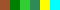
|
This reduced color table is also very important as a way of storing a colormap
of generated colors in a very small file. Such maps are particularly
important for the "
-remap"
color reduction operator. (See
Pre-Defined Color Maps
below)
If you like to get an image containing not just the colors in an image but
the color counts, here is one color-histogram solution what was developed from
a
IM Forum Discussion.
magick rose: -colors 256 -format %c histogram:info:- |
sed 's/:.*#/ #/' |
while read count color colorname; do
magick -size 1x$count xc:$color miff:-
done |
magick - -alpha set -gravity south -background none +append \
unique_color_histogram.png
|
![[IM Output]](../images/rose.gif)
![[IM Output]](unique_color_histogram.png)
Note that I had to
Color Reduce the image, as the
built-in "
rose:" image contains 3020 unique colors, which would
take a long time and generate a very long image. The GIF image of the rose
shown above contains the same set of color reduction.
The resulting image still contains the same number of pixels, though padded
with extra transparent pixels, and as you can see shows a predominance of
greenish greys, strong reds, as well as a very strong peak of pure white.
This may not be the best general color histogram method, but it works well for
this image.
|
The order of the colors for both "histogram:" and "-unique-colors"
operator, is undefined, but appears to be sorted by red, then green, and
finally blue channel value. This may not the best way for a specific image,
but it is impossible to generally sort 3-dimensional colors into
a 1-dimensional order.
|
Extracting the Average Color
The average color of an image can be found very quickly by using "
-scale" to reduce an image to a
single pixel. Here for example is the average color of the built-in
"
rose:" image. I output the color using the
FX Escape Format which returns a color
string that can be used directly IM without change.
magick rose: -scale 1x1\! -format '%[pixel:s]' info:-
|
The problem with using the "
%[pixel:...]"
FX Escape is that it may return a color
name such as '
white' or '
silver' instead of a RGB
value.
However you can simulate this by using three
FX Escapes to return the actual RGB
values at the bit depth wanted. For example...
magick rose: -scale 1x1\! \
-format '%[fx:int(255*r+.5)],%[fx:int(255*g+.5)],%[fx:int(255*b+.5)]' info:-
|
As of IM v6.3.9 there are a number of new "
-format" escapes that can be
useful to extract more specific information about images without needing to
parse a verbose "
identify" or
"
info:" output.
For example you can get the average red channel colour by getting the
'
%[mean]' greyscale value from of the images, red channel image.
magick rose: -channel R -separate -format '%[mean]' info:
|
Extracting a Specific Color
From the command line there are two basic ways of extracting a specific pixel
color from an image. Either use an
FX
Escape such as "
%[pixel:...]" or "
%[fx:...]"
(see above) on a specific pixel location...
magick rose: -format '%[pixel:p{40,30}]' info:-
|
Alternatively you can simplify the image by using "
-crop" to cut out a single pixel
that you may be interested in, and use any of the previous methods. For
example...
magick rose: -crop 1x1+40+30 -depth 8 txt:-
|
Counts of a Specific (or near) Color
This can be used to get the pixel count or percentage of a specific color.
What you do is make anything not that color black, and then make that color
white. For example lets get the number of colors in the "
yellow"
sun in the 'tree' image.
magick tree.gif -fill black +opaque yellow \
-fill white -opaque yellow \
-print "yellow sun pixels = %[fx:w*h*mean]\n" null:
|
There is one cavat, it will not work if the color under test is itself black.
To handle black (or very dark colors) swap the fills to map non-black colors
to white and then
Negate the results to
generate the white mask of all black pixels.
Remember the "
-print"
option is equivalent to using "
-format ... -write info:" and can
be used anywhere within your image processing. I then junked the unwanted
image using the special "
null:"
file format. You can also save the image to use as a mask for later work too.
Note that while this will work fine for small images, with much larger images
(like high resolution digital photos) the 'mean' will not be accurate enough
to get an exact pixel count! Basically the above use of 'mean' is sutiable
for generating a ratio, but not for exact pixel counts. To get an exact pixel
count you are better of using a histogram 'comment' output that has exact
pixel counts (see above).
The above can also used a
Fuzz Factor
option "
-fuzz" before the
"
-opaque" operator to
specify 'near' colors as well.
Comparing Two Colors
So you have two specific colors and you want to magick compare them.
You can use "
compare" get the RMSE (on standard error)...
magick compare -metric RMSE xc:Navy xc:blue null:
|
This is good as it will get you the distance between the two colors, both in
terms of values, and as a normalized percentage of the distance from black to
white.
However this method will not handle transparency properly. For example
comparing 'fully-transparent black' vs 'fully-transparent white'.
magick compare -metric RMSE xc:'#0000' xc:'#FFF0' null:
|
Transparent colors should actually have a zero distance as fully transparent
is the same regardless of the underlying color. Instead we got a 4-d
hypercube distance). As such the above method of color distance is only
suitable for comparing fully-opaque colors only.
Rather than getting an actual distance, you can also use a
Fuzz Factor to check is two colors are
close.
magick compare -fuzz 20% -metric AE xc:Navy xc:Blue null:
magick compare -fuzz 30% -metric AE xc:Navy xc:Blue null:
|
Remember however that the result will be '
1' if the pixels do not
match (number of error pixels).
To get the actual 'fuzz' factor distance that separates the values you can use
the 'FUZZ' metric.
magick compare -metric FUZZ xc:Navy xc:Blue null:
|
The 'normalized' value shows that the actual distance is 28.7%.
Using
Fuzz Factor, is different to
calculating the RMSE when transparency is involved. That is because the fuzz
factor is designed so that any two fully-transparent colors are treated as
being equal.
As such 'fully-transparent black' and 'fully-transparent white' are exactly
equivelent (producing a value of 0 or no error pixels)...
magick compare -metric FUZZ xc:'#0000' xc:'#FFF0' null:
|
Another method of color comparing is to try and
Replace Colors with an appropriate
Fuzz Factor percentage.
For example...
magick xc:Navy -fuzz 20% -fill Blue -opaque Blue txt:
|
As '
Navy' did not change to '
Blue' it is more than
20% different to '
Blue'. Where as
magick xc:Navy -fuzz 30% -fill Blue -opaque Blue txt:
|
This did change the color to '
Blue', so we now no know that
'
Navy' is somewhere between 20% and 30% distant from each other.
To do this in a script use something like...
fuzz=%1
color1="red"
color2="#e00"
color2=`magick xc:"$color2" -format '%[pixel:s]' info:`
result=`magick xc:"$color1" -alpha set -channel RGBA -fuzz $fuzz \
-fill $color2 -opaque $color2 -format '%[pixel:s]' info:`
if [ "$result" = "$color2" ]; then
echo "Colors match according to Fuzz Factor"
else
echo "Colors DO NOT match"
fi
|
The special options "
-alpha set -channel RGBA" are important to
allow us to for fuzzy matching of transparent and near transparent colors.
Color Quantization
Color Quantization Operator
The primary work horse of color quantization, and what is used internally for
all automatic color reduction, is the "
-colors" operator.
This implements a "Adaptive Spatial Subdivision" color reduction algorithm,
and is an extremely good color reduction algorithm.
Here is a typical example, I have an image of a 'colorwheel' image containing a
lot of colors, and we ask IM to reduce the number of colors down to only 64
colors, using various
dither methods.
magick colorwheel.png -dither None -colors 64 colors_64_no.gif
magick colorwheel.png -dither Riemersma -colors 64 colors_64_rm.gif
magick colorwheel.png -dither FloydSteinberg \
-colors 64 colors_64_fs.gif
|
![[IM Output]](colors_64_no.gif) 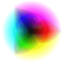
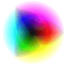
IM will by default use a 'dither' to shade the colors over the image. This
prevents the sudden changes in color over smoothly changing gradients.
If you turn off dithering (using '
None' or a "
+dither" setting) you can clearly
see what colors were merged together to generate what IM regarded as the best
set of colors for this specific image. You can also see the sudden color
changes that gradients of color will produce if dithering was not done.
Of course this image uses a lot more colors than what most images use. As such
while a 64 color limit is often acceptable for many images, it is completely
unacceptable for this image. In other words color quantization tries to find
the best set of colors for a particular image.
Here are example of color quantization for part of IM logo, using an extremely
small number of colors.
magick logo: -resize 40% -crop 100x100+105+50\! -normalize logo.png
magick logo.png +dither -colors 8 colors_8_no.gif
magick logo.png -dither Riemersma -colors 8 colors_8_rm.gif
magick logo.png -dither FloydSteinberg \
-colors 8 colors_8_fs.gif
|
![[IM Output]](logo.png)
![[IM Output]](colors_8_no.gif)
Compare that with some results for the built-in "
rose:" photo
image.
magick rose: +dither -colors 16 colors_16_no.gif
magick rose: -dither Riemersma -colors 16 colors_16_rm.gif
magick rose: -dither FloydSteinberg \
-colors 16 colors_16_fs.gif
|
![[IM Output]](colors_16_no.gif)
![[IM Output]](colors_16_rm.gif)
![[IM Output]](colors_16_fs.gif)
As you can see cartoon-like images require far less colors than a real
photograph to produce a reasonable result.
 |
Only one Color Quantization algorithm, "Adaptive Spatial Subdivision", is
currently implemented in IM, and as it works very well, there has been
little need to add others. However with feedback this algorithm is being
steadily improved.
ASIDE: As a reference the "Gifsicle" program lists a number of other color quantization
methods (using it "--color-method" option). I have no idea as
to how well these color quantization methods magick compare to IM. If you find a
good reference to different methods of color quantization, please mail me.
|
Color Quantization Internals
The process of selecting the limited number of colors to use in an image is
called Color Quantization, and is a very complex process involving a number of
factors. A full technical description of it is given on the ImageMagick web
site
Color
Reduction Algorithm. However I'll try to example some of the more
important aspects of this here.
Probably the biggest factor is the actual colors used in an image. It is no
good picking a particular color for an image if their are very few pixels that
are 'close' to that color. As such the color choice depends not only on the
colors used in an image, but the number of pixels 'close' to the color.
I can demonstrate this quite easily by trying to reduce two different two
color images to a single common color.
magick -size 4x1 xc:blue -draw 'fill red point 0,0' \
-scale 20 colors_rb.gif
magick -size 4x1 xc:red -draw 'fill blue point 3,0' \
-scale 20 colors_br.gif
magick colors_rb.gif -colors 1 colors_rb2.gif
magick colors_br.gif -colors 1 colors_br2.gif
|
![[IM Output]](colors_rb.gif) 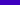
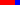
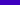
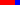
![[IM Output]](colors_br2.gif)
As you can see the single final color depends not only on the colors present,
but the amount of each color in the image.
magick -size 20x640 gradient: -rotate 90 gradient.png
magick gradient.png +dither -colors 5 colors_gradient.gif
|
Note that the color quantization is uniform, within the current colorspace.
FUTURE: Just what are the effects of the "-treedepth" setting?
Mail me if you know
Color Quantization and ColorSpace
The other big influence on what colors are selected is defining exactly what we
mean by colors that are 'close' or 'nearby'. This is defined by the
colorspace used for the quantization (color selection), and is (as of IM
v6.2.8-6) controlled by the "
-quantize" colorspace setting.
The "
-quantize" setting
becomes particularly important when a very small number of colors are chosen.
To demonstrate, lets reduce a standard '
colorwheel' image using various different color spaces and defining
different 'color distances'.
for S in RGB CMY sRGB GRAY \
XYZ LAB LUV \
HSL HSB HWB \
YIQ YUV OHTA ; do \
magick colorwheel.png -quantize $S +dither -colors 16 \
-fill black -gravity SouthWest -annotate +2+2 $S \
colors_space_$S.gif; \
done
|
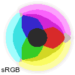
![[IM Output]](colors_space_CMY.gif) 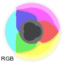
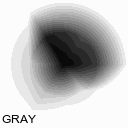
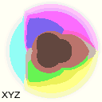
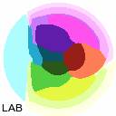
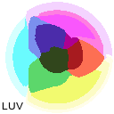
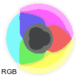
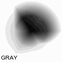
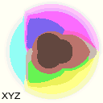
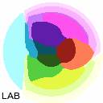
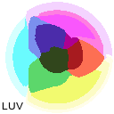
![[IM Output]](colors_space_HSL.gif) 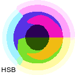
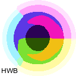
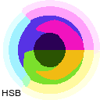
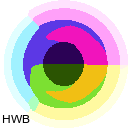
![[IM Output]](colors_space_YIQ.gif)
![[IM Output]](colors_space_YUV.gif)
As you can see the colors chosen depend heavily on how the colorspace is
organized. The sRGB (Red, Green, Blue) color cube will generally result in at
least the colors close to the primary color being picked.
The sRGB color space is particularly good at picking colors for cartoon like
images and icons, but is actually a bad color space for general picture-like
photos.
The CMY color space is exactly the same as sRGB color space as the color
channels are simply negated to magick between sRGB and CMY colorspaces. As
such the quantization colors end up with roughly the same solution.
|
The CMYK colorspace (not shown) also produces the same but for different
reasons. Because internal the 'K' channel and an images 'colormap' use the
same data pointer (See Palette Channel),
IM converts it back to CMY before quantization.
|
The sRGB colorspace as expected produces a simular result as RGB, but is
warped to remove the number of near-black colors in the colorspace. As such
there is less colors for the center of the colorwheel to select from,
producing a larger 'not quite so black' spot.
The XYZ colorspace is also very very similar to linear RGB colorspace.
The big difference here is that the color axis has shifted so as to better
contain ALL the posible colors we can (and even colors we normally cannot)
see, as such the color data in the colorwheel are compressed a bit more, and
as a result the quantizations seems to become spread out more.
The LAB and LUV color spaces are based on a different but simular color axis
to each other. That results a different arrangement of color quantizations.
The special color spaces involving a 'Hue' channel, such as HSL (Hue
Saturation, Lightness), HSL (Hue, Saturation, Brightness), and HWB (Hue,
White, Black), all have a cyclic color wheel representation of color as part
of its color space. Actually it was using a HSL color space what was used to
generate this color wheel. See
Generating a Colorwheel.
|
At the time of writing, the color distance algorithm IM uses does not take
into account the cyclic nature of the 'Hue' of the colorspace. The algorithm
for this is very different. Because of this a strong discontinuity occurs
along the 'red' path, where the 'Hue' wraps around, and results in
very few red colors being selected in the color quantization process.
|
The YIQ, YUV are designed to produce more natural 'pastel' and 'mid-tone'
shades of colors that are much better suited for photographs and images of the
real world involving subtle shades of colors, and especially skin tones.
Helmut Dersch notes on
his web site
that you should consider using a LAB colorspace for distortions.
|
In older versions of IM (specifically IM version 5) the color space that
was used for quantization was set with the "-colorspace" option.
However in IM version 6 this operator is used for modifying how images are
stored in memory, and as such is not a setting for color quantization.
As such in IM v6.2.8-6, the "-quantize" setting was provided to do this job. However it is
only as setting for the "-colors", Color Quantization process. It will not do anything
for the replacement and dithering of colors using operators such as
"-remap" and "-posterize", or the various
dithering techniques.
|
For a complete list of the colorspaces available see the "
-colorspace" operator.
You can see more effects of the colorspace on color selection by looking at
the examples on
Random Spots of Solid Color.
There color quantization is used to reduce the number of colors in a
randomized image using various colorspaces.
Quantization does NOT Preserve Colors
Note that in all the above images a pure-black color is never actually picked
by Color Quantization. Mind you their is only one pure black pixel, and not
many near-black colors in the image in any case. As a result the only black
that appears in the final image was added later as part of the labeling of the
image.
Even the 'GRAY' color space image did not produce a pure-black
color. In fact none of the images contains any of the primary or secondary
colors, such as: red, blue, green, cyan, magenta! The only exception to this
is white, as the images did contain quite an amount of pure white color,
making it a 'preferred color' (see below).
This situation however is not a bug!
First, a 'black' color was generally not selected in the above
examples, usually because as their is very little black in the original image,
so the Color Quantization generally did not worry too much about dark colors.
In fact it generated more of the lighter colors as these are more common in
the image. See the previous section for a specific example.
Secondly, as quantization is trying to pick colors that are close to the
maximum number of existing color pixels in an image, this is best achieved by
NOT matching a 'pure' primary or secondary color as these are the always at
the very extremes of the color space being used. An 'off-color' will tend to
match more colors than a 'primary' color, so these are more often selected.
So let me be clear...
Color Quantization ("-colors") will generally avoid picking primary colors!
As of IM version 6.3 the Color Quantization function was modified to try to
include colors that are very common in the original image. As such if an image
contains an area of a single color (such as 'white' in the above),
that color will generally be included in the final color map.
This improves the situation somewhat, especially for 'cartoon' like images or
images on a solid color background. The 'solid' color will generally be
picked so as to help avoid Dither Speckling
which we will look at below.
Specific Color in Colormap Solutions
At the moment there is only a few ways to guarantee a 'specific color' gets
included into the selected colors for later dithering.
One way is to quantize the image as normal, but then output the generated
color map (using "
-unique-colors"). Now you can adjust that color map so your
specific color is really that color. Finally you can use the
Remap Colors operator to dither the image using the provided color map.
The colormap may no longer be the BEST colors for the image, and some other
colors probably should also be adjusted, but it will be close to the colormap
that you wanted.
Alternatively, append (enlarging the image) large patches of the specific
colors wanted to be preserved in the image, before using "
-colors". The addition of the
large 'swatch' of a specific color, will make that color more likely to be
picked in the final color map. Also all the other colors will then
automatically be adjusted to fit that color map better).
If this works, the swatches of colors you added should remain unchanged (not
dithered). Afterwards you can then
Crop the image
to remove the added swatches. If it doesn't work, then IM should have at
least added a color close to the wanted 'specific color' so only a slight
adjustment of the generated colormap needed before using
Remap Colors to the original image.
If you try this, regardless of success or failure, please let me know how
it went for you.
Ideally, what I would like to see a way to specify a small
number of specific colors, that must be part of the final color map, and then
somehow ask IM to pick the best colors for rest of the colors in the color
map, for a specific image.
Color Quantization and Transparency
ImageMagick by default not only generates fully opaque colors, but also
attempts to generate semi-transparent colors. In this way, images containing
transparent shadows or other overlay effects will not loose those effects.
However as IM v6.2.6, color quantization that involves transparency was
modified so as to treat all fully-transparent colors as being the same color.
This is a linear modification, so colors which are only half-transparent are
also thought to be closer together than if they were fully opaque.
Because of this modification IM Color Quantization will still generate
semi-transparent colors, but will concentrate more on the opaque colors
and less on the fully transparent colors in the image.
For example here I generate a
Rainbow Gradient of colors, with the image fully-opaque at the top, and
fully-transparent at the top. I have displayed the images on a background
pattern so that you can see just how transparent the image is.
magick xc:red xc:yellow xc:green1 xc:cyan xc:blue \
+append -filter Cubic -resize 100x100\! -size 100x100 \
gradient: +matte -compose CopyOpacity -magick composite alpha_gradient.png
magick alpha_gradient.png +dither -colors 256 alpha_colors_256.png
magick alpha_gradient.png +dither -colors 64 alpha_colors_64.png
magick alpha_gradient.png +dither -colors 15 alpha_colors_15.png
|
As you can see, when we ask IM to reduce the number of colors needed by this
image, it created a lot more opaque colors and used fewer highly transparent
colors for the more translucent parts. The result is a very good spread of
colors selected, especially when the number of colors is very small.
However just as I pointed out above, not only do
primary colors not get picked, but the fully-transparent color will also
not get picked for exactly the same reasons. In actual fact even fully-opaque
colors will not get picked! In other words every color in the color quantized
images in the previous example is semi-transparent.
Let me just make that clear.
When transparency is involved, IM Color Quantization
may not select any fully-opaque or even a fully-transparent color!
Of course as of IM v6.3, and the 'common color' bug fix (see
Quantization does NOT Preserve Colors above),
that is less likely to happen if the image contains a lot of opaque and
fully-transparent colors, which is commonly the case.
As some images can contain a lot of semi-transparent colors, such as images
involving smoke or shadows effects, you may like to do a trial run, to make
sure a fully-transparent color is selected for inclusion in the resulting
image. You can then map the most-transparent color to fully-transparent,
and do the
Remap Colors yourself.
If you really want to be sure you get both fully-opaque and fully-transparent
colors in the resulting image you can
Normalize OR Contrast-Stretch the alpha channel.
For example here I ensure the main color selects are made opaque by using
"
-contrast-stretch". Though this is probably a little heavy handed
for a more normal situation.
magick alpha_gradient.png +dither -colors 15 \
-channel A -contrast-stretch 10% alpha_colors_15n.png
|
This is NOT a problem for GIF images which do not allow semi-transparent
colors, or JPG which does not allow transparency, or even PNG which do not
need quantization to save properly. It only becomes a problem in special
cases where you may force a color reduction in an image when lots of
semi-transparent colors are involved.
Remember for the GIF format saving semi-transparent colors is an useless
endeavor. As such if you plan to do color quantization yourself for such an
image format, you need to tell IM to ignore image transparency when generating
its reduced color set. you can do that by using the special "
-quantize" color space setting of
'
transparent'.
magick alpha_gradient.png -quantize transparent \
+dither -colors 15 alpha_colors_15qt.png
|
Notice how the color quantization completely ignored the transparency of the
colors, and did not touch the images alpha channel at all. This means you can
process the alpha channel in a more appropriate way for your image, completely
separately to the other colors. In fact you can do so either before or
after using "
-colors"
without problems. It will make no difference in the result.
This quantization color space is thus recommended when reducing the number of
colors for an image you plan to save to a format with Boolean or no
transparency, such as GIF or XPM image formats.
If you count up the number of colors generated you will also see that it
generated exactly the number of colors requested. As such if you you also
need a fully transparent color (likely) then you need to reduce the argument
of "
-colors" by at least
one, to leave space for it in the images final color table.
Thus to handle the GIF file format 256 color color table limit, you will need
to reduce colors to 255, and not 256, leaving the extra space for the
fully-transparent color index, as defined by the "
-transparent-color"
setting. Adjust this for a smaller color table sizes.
This quantization behaviour is automatic when IM saves to the GIF file format,
but is important when you need to DIY the quantization yourself while
generating global or shared color tables.
Of course you do still need to handle the semi-transparent pixels, so they are
correct for what you want your image to look like.
FUTURE: This last part will probably move to a new section on 'Dithering
Alpha Channel' to be created in the near future. And a reference to this
section added here.
Here are some examples of dithering just the alpha channel to just a Boolean
or on/off setting, without effecting the rest of the color channels in the
image.
magick alpha_gradient.png \
-channel A -threshold 50% alpha_dither_threshold.gif
magick alpha_gradient.png \
-channel A -ordered-dither checks alpha_dither_checks.gif
magick alpha_gradient.png \
-channel A -ordered-dither o8x8 alpha_dither_ordered.gif
magick alpha_gradient.png \
-channel A -ordered-dither h8x8a alpha_dither_halftone.gif
magick alpha_gradient.png -channel RGBA -separate \
\( +clone -monochrome \) \
+swap +delete -combine alpha_dither_monochrome.gif
magick alpha_gradient.png -channel RGBA -separate \
\( +clone -dither FloydSteinberg -monochrome \) \
+swap +delete -combine alpha_dither_monochrome_fs.gif
magick alpha_gradient.png -channel RGBA -separate \
\( +clone -remap pattern:gray50 \) \
+swap +delete -combine alpha_dither_map.gif
magick alpha_gradient.png -channel RGBA -separate \
\( +clone -dither FloydSteinberg -remap pattern:gray50 \) \
+swap +delete -combine alpha_dither_map_fs.gif
|
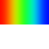
![[IM Output]](alpha_dither_checks.gif)
![[IM Output]](alpha_dither_ordered.gif) 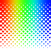
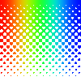
![[IM Output]](alpha_dither_monochrome.gif)
![[IM Output]](alpha_dither_monochrome_fs.gif) 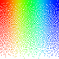
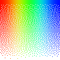
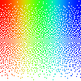
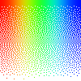
|
When dithering a copy of the Alpha Channel, so you can dither it using
either "-monochrome", or "-remap", make sure the image is a pure grayscale image, and not
a shape mask containing transparency. If you don't you will probably end up
with non-linear effects from the alpha channel still being present.
There are a number of ways of extracting and restoring the alpha channel
from an image, as a gray-scale mask so you can dither it. The above uses
the Channel Separation and Combine to do this. Other methods use Alpha Extraction with CopyOpacity Composition.
|
Error Correction Dithering
As discussed in the introduction an error correction dither is generally
regarded the best choice for producing the truest representation of the
original image with a reduced color set. It also limits itself to
any pre-defined palette of colors, whether it was user supplied, or as
determined by the IM color quantization routines.
Because of this it is the logical default choice for general color reduction
as provided by the IM operators, "
-colors", "
-remap", "
-posterize" and "
-monochrome".
E-Dither Methods
As of version 6.4.2-9, IM now provides more than one type of dithering style
or method, which can be selected using the "
-dither" setting. Before this IM
was limited to a variation of the
Riemersma Dither, or
Hilbert Curve Dither. which
you can set using "
-dither Riemersma".
Now you can also select a Floyd-Steiberg Dither using "
-dither
FloydSteinberg". You can see what types of dither methods has been
implemented in your version of IM using...
For example here is the color wheel dithered using different dithering methods.
magick colorwheel.png -dither Riemersma -colors 16 dither_riemersma.gif
magick colorwheel.png -dither FloydSteinberg -colors 16 dither_floyd.gif
|
![[IM Output]](dither_riemersma.gif)
![[IM Output]](dither_floyd.gif)
As you can see the Floyd-Steinberg dither produces a much more uniform dither
pattern than the default Riemersma dither. The biggest difference between
them is how each of them distributes the 'color error' between neighbouring
pixels. So lets have a look at just how an E-Dither works.
How an E-Dither Works
 Re-Write In Progress
Re-Write In Progress

The specific method used by IM for general dithering is a variation of the
"Hilbert Curve Error Correction Dither". This is actually a very good
dithering technique, very well defined and reasonably quick. For a full
description (and a very similar variation) see...
Riemersma Dither.
Basically each pixel in the image is looked at in a very complex path known as
a '
Hilbert Curve'. The
pixel is assigned the color closest to that pixels value, and any difference
between the pixels original color and the selected color, is saved and added
to the next pixels color values (which is always a neighbouring pixel) before
a new color is again selected. In this way any color variations between
selected colors and the images original color is distributed to the other
pixels in the same area. The result is that while only specific colors will
be assigned to the final image, the same basic overall color for that area
will closely match the original image.
For example, here is a small grey image that I asked IM to dither using a set
of colors that does not include the original color. The resulting image is
magnified so you can see the individual colored pixel assigned.
magick -size 10x10 xc:'#999999' -scale 80x80 dither_not.gif
magick -size 10x10 xc:'#999999' \
-remap colortable.gif -scale 80x80 dither.gif
|
![[IM Output]](dither.gif)
As you can see the as the original images color was not in the specified color
map, the original color is approximated using a pattern of the three nearest
colors that were in the given color table.
If we were to average the color generated by the above dither pattern, we
would get the color
![[IM Text]](dither_avg.txt.gif)
,
which is very close to the images original average color of
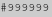
and that is the whole point of the dither pattern that was produced.
However as the 'path' used to assign colors is complex (though generally
remains in the local area), the color assignments produce an essentially
random pattern. It isn't technically random however as the same image will
produce the same pattern, but the results may as well be random, or at least
pseudo-random.
The "F-S" dither is actually only one (the first one) of several 'Rasterized
E-Dithers' that has been developed since its inception in the early 1970's.
It is also probably the most widely implemented, even though it is not
regarded as the best one. See the paper,
Dithering
Algorithms, for a more complete summary of such algorithms.
As of IM v6.4.3 it is also directly available in IM, and is implemented so as
to follow a 'serpentine' path row-by-row from the top of the image to the
bottom.
magick -size 10x10 xc:'#999999' -dither FloydSteinberg \
-remap colortable.gif -scale 80x80 dither_fs.gif
|
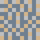
The "Floyd-Stienberg Dither" in particular I find produces a more 'hash' like
pattern of pixels than the "Hilbert Curve Dither", and was in fact designed to
do so.
Such a regular pattern can make a low level manual clean up of small color
icon images, a lot easier. This was something I did a lot of in my past for
Anthony's Icon
Library, but that type of thing is not often needed anymore, except
possibly for small monochrome images.
E-Dither Problem - Change Sensitive
One of the biggest problems you face when you use an error correction dither
is that you get an essentially random pattern of pixels, that is also highly
sensitive to changes.
Here for example take the original grey image and replace one pixel with a
different color before dithering it again. The result is a complete shift of
the dithering pattern in every pixel that is further along the path followed
by the Hilbert Curve Dither.
magick -size 10x10 xc:'#999999' -draw 'fill #C28 point 2,2' \
-remap colortable.gif -scale 80x80 dither_modified.gif
magick compare dither.gif dither_modified.gif dither_difference.gif
|
original dither
|
![[IM Output]](dither_modified.gif)
one pixel change
|
|
![[IM Output]](dither_difference.gif)
comparison of changes
|
As you can see just adding a single pixel to the image resulted in the dither
pattern changing dramatically! It only takes a single bit change for the
resulting image to become different, even though overall look of an image
(when not enlarged) is still basically the same (which is the purpose of a
good dither algorithm after all).
The "
compare" image also shows the extent of the change in the
dither pattern. In this case, approximately 80% of the pixels were assigned a
completely different color. In a Hilbert Curve Dither, a single pixel change
actually will result in every pixel that comes later being possibly different,
which means from 0 to 100% percent of the dither pattern could be
different. It just depends on where in the complex Hilbert curve the change
occurred.
The Floyd-Steinberg dither however only progresses though the image in one
direction, and as such a single pixel change will modify the pattern only to
one side of the change.
magick -size 10x10 xc:'#999999' -draw 'fill #C28 point 2,2' \
-dither FloydSteinberg -remap colortable.gif \
-scale 80x80 dither_fs_modified.gif
magick compare dither_fs.gif dither_fs_modified.gif dither_fs_difference.gif
|
FS Dither
|
![[IM Output]](dither_fs_modified.gif)
one pixel change
|
|
![[IM Output]](dither_fs_difference.gif)
comparison of changes
|
As you can see it has exactly the same problem. A single pixel change causing
an almost complete change in the dither pattern for the areas of the image
processed after that pixel. That is from that row downward.
For a single image the resulting pattern of the dithered colors is
unimportant. The average color of the pattern should give the image the
appropriate color for that area of the image. But when you have an animation
in which one image is followed by other very similar images, with large areas
of constant color, the changing dither pattern becomes highly noticeable and
irritating as a low level background 'noise'.
For example, here I generate a 3 image animation of the same dithered color
but with a single pixel change in each frame. I also magnify a central
region so you can see this changing pattern more clearly.
magick -size 80x80 xc:'#999999' \
\( +clone -draw 'fill #C28 point 2,2' \) \
\( +clone -draw 'fill #28C point 2,2' \) \
-remap colortable.gif -set delay 50 -loop 0 dither_anim.gif
magick dither_anim.gif -crop 10x10+40+40 +repage \
-scale 80x80 dither_anim_magnify.gif
|
![[IM Output]](dither_anim.gif)
![[IM Output]](dither_anim_magnify.gif)
As you can see you get a sort of churning background to the image, caused by
the pseudo-randomness generate by the E-Dither. In most cases the colors used
are close enough together so as not to make this 'dither noise' visible. But
when the dithering colors are visibly different (in this case forced by the
use of a colormap) it definitely becomes an issue.
See
Video Color Optimization for a more practical
example of an animation showing this 'dither noise'.
The change in pattern also cause problems in optimizing animations. That is a
different pattern means that simple
frame
optimization fails to reduce the size of frame overlays. For one solution
see
fuzzy color optimization, though
that only works when the churn is using very similar colors.
|
Unlike other dithering methods (such as threshold,
and ordered-dither) the "-channel" setting does not
effect color quantization, or error correction dithers. Basically has it
has no place in how these image operation work.
|
Ordered dithers do not have any of these problems, containing changes to the
immediate local area of the change. Unfortunately are also generally limited
to using a mathematically derived color set. (See
Ordered Dither using an Uniform Color Map).
E-Dither Pixel Speckling
Another problem with E-Dithers is that they can produce the occasional
odd-colored pixels in areas which would otherwise be fairly uniform in color.
For example the occasional green, pixel in a greyscale image. Or as in the
examples below, a white pixel in an areas of otherwise plain flat blue color.
This is especially the case in large images which containing objects with
large numbers of colors, and other areas of plain solid unchanging colors.
This is especially typical of colored objects overlaid onto flat colored
backgrounds, as you often get in diagrams and drawings.
You can see such an odd-colored pixel in the enlargement of the test examples
above, where an extra light purple pixel was added quite a distance from the
small single pixel change. The odd-colored pixels added to the above is not
however readily visible and the color map does cover the image rather well,
so the odd pixels are reasonably close to the normal three colors used for
dithering the image.
For a more extreme example, here I have a blurred gradient background, which I
heavily color reduced to 64 colors to really stress the error correction
dither.
magick -size 100x60 xc:SkyBlue \
-fill DodgerBlue -draw 'circle 50,70 15,35' \
-fill RoyalBlue -draw 'circle 50,70 30,45' \
-blur 0x5 -colors 64 speckle_gradient.gif
| |
|
As you can see with this highly reduced color map, the error correction
dither did a reasonably good job of representing the original gradient.
But if we add a patch of pure white to the above...
magick -size 100x60 xc:SkyBlue \
-fill DodgerBlue -draw 'circle 50,70 15,35' \
-fill RoyalBlue -draw 'circle 50,70 30,45' -blur 0x5 \
-fill white -draw 'rectangle 40,40 60,55' \
-colors 64 speckle_problem.gif
| |
![[IM Output]](speckle_problem.gif)
|
You can see that the E-dither suddenly started to produce a sprinkling of
white pixels in the upper area of the image where we didn't have any before.
Here is an enlargement a small section so you can see these pixel more
clearly...
magick speckle_problem.gif -crop 15x15+75+0 +repage \
-scale 90x90 speckle_prob_mag.gif
| |
|
The odd colored pixel is caused by two factors.
First, the Color Quantization was forced to include a single pure white color
(but no other white-blue anti-aliasing colors) into the final colormap for the
image, thus allowing the dithering process to use this extra color.
But as E-Dithers slowly accumulate errors, especially in areas of extreme
colors, such as in the top section of the above image. Eventually the errors
will add up to a value that is large enough make the one additional color the
closest match. As such, every so often a highly contrasting white pixel is
output to 'correct the error', at a pseudo-random location.
The result is a very light speckling of white pixels. The slower the
accumulation of error, the more spread out those white pixels are and the
more, out-of-place, they appear.
The best solution is to switch to some other image format that does not
have a limited color table. For example magick your GIF format image to PNG.
This will avoid the need for color quantization (reduction) and hence the need
to dither the reduced colors.
The next solution is to replace the use of E-dither with some other dithering
method, that 'localizes' any errors, such as
Ordered Dithering. However that is currently not easy thing to apply in
IM at this time. See
Better Ordered Dither Results,
for one such method until a more general one is found.
If switching to another image format, or using a different dithering method is
not practical (and often isn't), then you are left with attempting to fix the
situation for that specific image.
The best fix, to this is to somehow insure you have other colors just
outside the large group of colors that is causing the E-Dither error
accumulation. However normal
Color Quantization does
not do this. It tends to pick a set of average colors representing color
groups. What is needed is extra colors that 'picket fence' the edges of the
a large color group, rather than a simple average color.
Here for example, I used a circle rather than a square, so that not only is a
pure white color added, but a number of white-blue colors also. These were
added automatically due to the anti-aliasing of the circle edges, to smooth
its look.
magick -size 100x60 xc:SkyBlue \
-fill DodgerBlue -draw 'circle 50,70 15,35' \
-fill RoyalBlue -draw 'circle 50,70 30,45' -blur 0x5 \
-fill white -draw 'circle 50,45 40,40' \
-colors 64 speckle_fixed.gif
| |
![[IM Output]](speckle_fixed.gif)
|
And a magnification of the same area as before.
magick speckle_fixed.gif -crop 15x15+85+0 +repage \
-scale 90x90 speckle_fix_mag.gif
| |
|
As you can see the additional colors provide the extra colors, just outside
the blue-cyan gradient. Now while these extra colors will mean there are
fewer colors available for the actual gradient, they do provide other
blue-white colors that will allow the E-dither to correct itself sooner and
more often, before the accumulated error can grow too large.
That is not to say we have prevented E-dither speckling, just provided better
colors for the dither algorithm to work with. If you study the magnified
portion of the image you will still see a speckle pattern, but the colors are
closer to the background color, and there are a lot more of them producing
a more even, spread of speckles.
Another way is to generate our own color table, perhaps based on the one IM
generated, and add the appropriate colors to prevent the error accumulation.
This is however not an easy thing to do, especially with a 3-dimensional color
space.
For this specific image example, one way to prevent 'speckling' is to generate
and dither the background separately, with slightly less colors that is
needed, then overlay the white box and its additional color.
magick -size 100x60 xc:SkyBlue \
-fill DodgerBlue -draw 'circle 50,70 15,35' \
-fill RoyalBlue -draw 'circle 50,70 30,45' -blur 0x5 \
-colors 63 \
-fill white -draw 'rectangle 40,40 60,55' speckle_perfect.gif
| |
![[IM Output]](speckle_perfect.gif)
|
This will add a 'white' color to the image, but the background will not have
any speckling effect, as white was not available when the error correction
dither was used.
The result is an image with exactly 64 colors, and no speckling at all.
However this is very dependant on the image and what you are trying to
achieve, so is not a general solution to the specking problem.
A more general alternative to adding extra colors is try to remove the
speckles from the final dithered image. That is clean up the image in some
way.
However this is itself a tricky problem, as you do not what to remove pixels
which are part of the normal dithering pattern.
What we need is to find color pixels which are somehow very different to all
the colors surrounding it, but which are also well isolated from all other
similar colors, by some distance.
Do you have a better image filter solution?
Summary
To me speckling is a very annoying problem, especially for desktop icon images
using a very limited color table. I myself often edit smaller 'icon' images
to remove speckles or fix some of the other dithering effects, such a vertical
banding.
If you know of another better solution, please let me know.
Monochrome Dithered Bitmap Images
The "
-monochrome"
operator is a specialized form of both the "
-colors" operator to generate a
bitmap image. It is as such an ideal operator to demonstrate not only 'Hilbert
Curve Dithering', but also have a closer look at color selection.
Here is a typical example.
magick logo.png -monochrome monochrome.gif
| |
![[IM Output]](monochrome.gif)
|
The operator dithered the image solely based on their grey-scale brightness
'intensity' or 'level', however it doesn't dither the whole grey-scale range
directly but thresholds the most extreme values to their maximum values.
We can see this by asking IM to dither a gradient image.
magick -size 15x640 gradient: -rotate 90 \
-monochrome monochrome_gradient.gif
|
![[IM Output]](monochrome_gradient.gif)
As you can see the gradient only has about the middle 50% of its colors
dithered by the "
-monochrome" operator. Special thanks goes to Ivanova
<flamingivanova@punkass.com> for pointing out this interesting fact
of the was IM works.
If you like to dither using the whole grey-scale range, you can use the
"
-remap" operator using
a pure black and white colormap (supplied by a built-in pattern image).
magick logo.png -remap pattern:gray50 mono_remap.gif
magick -size 15x640 gradient: -rotate 90 \
-remap pattern:gray50 mono_remap_gradient.gif
| |
![[IM Output]](mono_remap.gif)
|
By more careful selection of colors using "
-remap" you can effectively produce
the same 'threshold' range as used by the "
-monochrome" operator, or any
other threshold range you like.
magick xc:gray20 xc:white +append ctrl_colors.gif
magick logo.png -colorspace Gray \
-remap ctrl_colors.gif -normalize mono_remap_ctrl.gif
magick -size 15x640 gradient: -rotate 90 \
-remap ctrl_colors.gif -normalize mono_remap_grad_ctrl.gif
| |
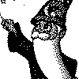
|
What "
-monochrome"
actually does is to first magick the given image first into a grey scale
image, after that it performs a two color '
Color
Quantization', to decide the threshold colors to dither the image with.
This is what the next section of examples will explore.
|
The "+dither" setting
currently has no effect on the result of "-monochrome". This however
may change in the future, so make sure it is not turned off in your scripts
when using this operator.
|
Two Color Quantization
Rather than picking the two control colors yourself, you can use color
quantization to pick the best two colors in the image by using the "-colors" operator.
magick logo.png -colors 2 -colorspace gray -normalize \
colors_monochrome.gif
| |
![[IM Output]](colors_monochrome.gif)
|
However the result will not be the same as using "
-monochrome", as we didn't
magick the image to grey-scale first.
Instead the image was dithered directly between the two non-grey color values
chosen.
That is the best two colors is selected to dither the image with, rather than
two gray-scale brightness levels. Consequently it will produce a better
result for say image that only uses colors of about the same gray-scale
'level'.
Here for example we use "
-colors", as well as a "
-monochrome" bitmap dithering
operator, on a red-blue gradient. As you can so you can see that the results
are not the same.
magick -size 20x640 gradient:red-blue -rotate 90 gradient_rb.png
magick gradient_rb.png -colors 2 -colorspace gray \
-normalize colors_threshold.gif
magick gradient_rb.png -monochrome mono_threshold.gif
|
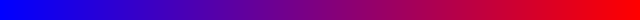
The "
-monochrome"
operator in the above failed to find any differences to bitmap dither as both
blue and red are very nearly the same intensity. Using a "
-colors" quantization method
however had no problem in finding acceptable colors to dither between.
You can also see that only the middle portion of the colors were dithered.
This is due to the color quantization picking colors in the middle of two
color 'clusters' it selected. Colors on the 'outside' of the selected colors
in is thus effectively threshold directly to that color without dithering.
This demonstrates that colors on the outside of the quantization color space
does not get dithered, though this fact is difficult to make use of in a
practical way.
By setting the "-colorspace" to gray-scale before quantization, you will reproduce
the internal operation of the "-monochrome" operator.
magick logo.png -colorspace gray -colors 2 -normalize \
monochrome_equivelent.gif
| |
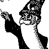
|
And finally, by turning off the dithering, you can produce a more automatic
separation of the colors in the image than produced by using a fixed "-threshold" setting.
magick logo.png -colorspace gray +dither -colors 2 -normalize \
threshold_two_grays.gif
| |
![[IM Output]](threshold_two_grays.gif)
|
|
Remember "-monochrome" currently ignores the "+dither" setting,
so you can't just use that operator to do a 'smart threshold'.
|
If you remove the "-colorspace" for the color quantization stage of the image
processing, you can threshold an image based on the best color separation
(rather than greyscale color separation) possible for that image.
magick logo.png +dither -colors 2 -colorspace gray -normalize \
threshold_two_color.gif
| |
![[IM Output]](threshold_two_color.gif)
|
Dither using Pre-Defined Color Maps
As shown above "
-colors"
attempts to choose an optimal limited set of colors with which to represent an
image. With "
-remap" you
provide IM with the final set of colors you want to use for the image, whether
you plan to dither those colors, or just replace the ones with their nearest
neighbours.
The argument is given as an image containing all the colors you would like to
use. If you what to reduce a large image of colors to just its list of
colors, you can use "
-unique-colors", before saving, it for later use by "
-remap".
|
Note that while the "-remap" operator will accept any image to use, do not use a JPEG
image for this image or you will get a lot of extra colors due to its 'lossy
compression' generating extra colors.
On the other hand using JPEG to generate extra colors may help resolve the
'speckling' problem seen previously!
|
For example here I limit the colors used in the IM logo to a predefined map of
named X window colors. The default is the '
Riemersma' dither,
but as of IM v6.4.4 "
-dither" was expanded to allow the selection of other dither
methods such as '
FloydSteinberg'. You can of course still turn
off dithering using the "
+dither" option.
magick logo.png -dither None -remap colortable.gif remap_logo_no.gif
magick logo.png -dither Riemersma -remap colortable.gif remap_logo_rm.gif
magick logo.png -dither FloydSteinberg \
-remap colortable.gif remap_logo_fs.gif
|

![[IM Output]](../images/colortable.gif)
![[IM Output]](remap_logo_rm.gif) 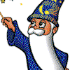
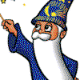
As you can see IM attempted to do a reasonable job of representing the image
using just the given colors, though the results is nowhere near as good as the
image you get if you allowed IM to select the color set to use.
Mind you this "
colortable.gif"
image was never designed for dithering images, but as a color set for
designing cartoon-like color icons for older more primitive X window color
displays (See
Anthony's X
Window Icon Library and
AIcons Color
Selection for details).
Also note that the final image did not use all 32 colors provided by this map,
though more of the colors in the map will be used when some form of dithering
was enabled (
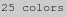 and

respectively), than when it was turned off (

).
This last example shows just how important selecting a good colormap is.
Because of this I recommend you let IM optimize the color selection used in an
image using the "
-colors" operator, and modify that to suit your needs, unless you
have more pressing reasons not to do so.
One final point, while you can specify a color space in which "
-colors" will find the best set
of colors, you currently can NOT define a color space for the color mapping or
dithering phase. All my experiments seem to show that the color set is
applied (both error correction dither and nearest color replacement) based on
RGB space. The "
-quantize" colorspace setting is only used for the selection of
colors, not its mapping.
So if using a color map is such a bad idea, why would you want use it?
There are a number common reasons, usually because you need more control of
the specific palette of colors used in an image. Another user also separated
the colormap out so he could use it on a Risograph (A digital printing
system).
If you know of another reason to use the "-remap" operator which I have not
presented below - Mail me.
Common or 'Best' Colormap
The other technique, when handling multiple images, is to generate a common
color table for all the images involved.
Basically you append all the images together into one large image, then use
the "
-colors" operator to
figure out a good color map to use that is common to all the images. Once you
have that color map image you can use it to re-color each of the original
images using this juts generated
Pre-Defined Color Map.
Alternatively, you can use the special "
+remap" operator, which does the same thing to a 255 color colormap.
It counts up the colors, perform the color quantization to form a good, common
colormap, then dithers the images to use that map, if needed.
Both "
-remap" and "
+remap" forms however has one very
important feature for GIF animations. It converts all the images to an image
"
-type" of
'
Palette' with all the images using the same palette of colors.
The reason is that when writing a GIF image, the first images color palette,
will be used for the file formats 'global colormap'. Then as each image is
written it notes that those images use the same set of colors, so it does NOT
create a 'local colormap'. This can save up to 256 × 3, or 768 bytes of
colormap space for each and every image the final GIF file.
Only the "
-remap" operators
can do this. So when handling GIF's and in particular GIF animations, it can
be an important point to remember.
For more details, and an example see
Gif
Animations, Global Color Table.
Web Safe Coloring
When the WWW was first created, computer displays had a limited range of colors
available, and web browsers usually used a simpler set of colors for images.
As such it was common to recolor images to this color set, to make them both
smaller, and to ensure they will look okay on users browsers. For more detail
see
Web Style
Guide, Dithering.
To help with this IM provided a built-in colormap image of this special table
of 216 colors, called "
netscape:". So lets look at how our test
image would look on of an old web browser magick display using these colors.
magick logo.png -remap netscape: remap_netscape.gif
magick logo.png +dither -remap netscape: remap_netscape_nd.gif
|
![[IM Output]](../images/netscape.gif)
![[IM Output]](remap_netscape.gif)
![[IM Output]](remap_netscape_nd.gif)
This color set was a mathematically determined pallet, designed by engineers
of displays and computers, not graphic artists, and while it is is general
enough that it works reasonably well for real images such as photos, it is
very bad for images containing large flat areas of color, such as logos,
backgrounds, computer generated images such as graphs, and cartoon-like
images.
Basically this works in areas of highly variable colors, but for the larger
flat areas of constant colors a dithering of three colors (in general) is
applied, such as the off-blue shirt of the IM logo test images (above).
In other words, if you were designing an image or logo for use on the web, you
work generally try to use the colors in this pallet for the large flat areas,
and only have dithered colors in areas where your have varying shades of color.
The above commands lets you test your images to see how they would look on
more primitive computer displays, and to edit image to use these colors, so
they will work well. This is particularly important for symbols and
navigation images.
Of course today, thanks to the demands by game and web users, you can be
pretty well assured that most users have a modern computer magick display that does
not have those old color limitations, however the use of this "web safe
palette" is still around, as it does have other benefits, such an image
compression.
For a discussion about the use of Web-safe colors in the modern world see
Death of the Web-safe
Color Palette?, and probably a more important view from a graphic designer
that first identified this color map,
Lynda Weinman.
Generating Color Maps
Determining a good color map for any image, or an specific set of images, can
be very important. This becomes especially important when you are dealing
with a sequence of images that will be used for GIF animation. Basically you
want to make it so they only need one color table, to use for all the frames
of the animation, rather than a separate color table for each frame. In other
words you want one single color map for all the image.
You have really only two choices in this case. You can attempt to create
a colormap that will work well for any image, or you try to optimize a color
map for the specific set of images you are applying it to.
Web-Safe Colormap
The first method is typically a mathematically generated color map, such as
the IM built-in "
netscape:" color map. This provides a set of
216 colors, which will nicely fit into the GIF formats 256 color limit, and
still have space for handling image transparency, or even adding some extra
colors for special purposes, like shadows, or text overlays.
This color map was generated by creating 6 levels of colors for each of the
three color channels, producing 6×6×6 colors or 216 colors. The
number of the beast.
As only 219 color are used it still has space (for GIF images) to add more
colors to the color map for specific purposes. For example a transparent
color, as well as more grey scale shades. An old Macintosh version of the
web-safe map actually did exactly this to try to improve its overall result,
but it was only used on Macintosh web clients.
This is probably the most common 'uniform' (or mathematically derived)
colormap in general use, thanks to its simplicity, and its general use on the
the World Wide Web.
Uniform 332 Colormap
Another uniform color mapping that is commonly used is the "332 RGB color
map". The number refer to the number of bits used to represent each color
within a 8 bit color index. That is 3 bits (or 8 levels) of red, 3 for green,
and 2 bits (or 4 color levels) for blue, seeing as our eyes do not respond
well to blue.
This gives 3+3+2 bits or an 8 bit color index, or 256 colors. Perfect for the
limited GIF color table. However it will not leave any space for a GIF
transparency color, or other special use colors.
Here is one way to get IM to generate this color map...
magick -size 16x16 xc: -channel R -fx '(i%8)/7' \
-channel G -fx '(j%8)/7' \
-channel B -fx '((i>>3&1)|(j>>2&2))/3' \
-scale 600% colormap_332.png
| |
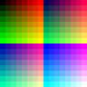
|
| The bit-shifting operators
'>>' and '<<' was missing from the
"-fx" operator until IM
version 6.2.9-2.
|
A simpler way of doing the same thing is to use
Ordered Dither using Uniform Color Levels using the operation,
"
-ordered-dither threshold,8,8,4" (see that examples area).
A far easier and faster technique than the above
DIY FX method, and even allows you to use other built-in dithering maps
for better gradient handling.
The only drawback with this map is that it does not actually provide any
'gray' colors at all. However this drawback can be a plus when dithering is
used as the slight color differences reduce the effect of color boundary
changes in a grey-scale gradient, making it just that little bit smother
looking.
TrueColor 16bit Colormap
A similar uniform colormap to the '332 colormap' above is used by X windows
in a rarely used 16 bit visual class. In this case, 16 bits are used for the
color index which is divided into 5 bits for red, 5 for green, and 6 for blue.
In other words, this color map is more like a "556 colormap", and is best
achieved using a
Ordered Dither using Uniform Color
Levels using a 'threshold' dithermap. Specifically the operation
"
-ordered-dither threshold,32,32,64".
16 bit colormaps are however rarely seen as images using colormaps typically
need a 8 bit color table. As such I won't mention it further.
Gamma Corrected Uniform Colormaps
At this time IM does not do gamma corrected color maps directly.
Instead what you should do is magick your image (assuming you have Q16 or
better compile time
quality version of IM),
from the sRGB or whatever gamma level the image has to a linear RGB model,
before doing your dithering.
This also goes for many other image processing operations, such as resize,
bluring, etc.
See
Resizing with Gamma Correction for
an example.
Posterize, Recolor using an Uniform Color Map
The operators original purpose (using an argument of '2') is to re-color
images using just 8 basic colors, as if the image was generated using a simple
and cheap poster printing method using just the basic colors. Thus the
operator gets its name.
The "
-posterize"
operator is actual fact is a special color reduction operator that generates a
color map based on the the number of color 'levels' given, for each color
channels in the image, dithering the image using an error correction dither.
magick netscape: -scale 50% +dither -posterize 2 posterize_2_ns.gif
magick netscape: -scale 50% +dither -posterize 3 posterize_3_ns.gif
magick netscape: -scale 50% +dither -posterize 6 posterize_6_ns.gif
|
![[IM Output]](posterize_2_ns.gif)
![[IM Output]](posterize_3_ns.gif)
![[IM Output]](posterize_6_ns.gif)
As you can see a "
-posterize" argument on '
2' means to only provide 2
colors per color channel, producing a map of just 8 colors for a 3 channel RGB
image, such as the above. Basically it will recolor images using the threshold
set of 8 colors.
An argument of '
3' will map image colors based on a colormap of
27 colors, including mid-tone colors. While an argument of '
4'
will generate a 64 color colortable, and '
5' generates a 125
color colormap. Of course as mentioned above, an argument of '
6'
will reproduce the same set of 216 colors, as provided by the in the built-in
"
netscape:" image.
Please note that a "
-posterize" argument of '
0' or '
1' is
non-sensible, and with the latest IM releases just converts images to pure
black (which though logical, is quite useless).
The result is that the image has been recolors using a mathematically derived
or 'uniform' color map.
You can see this more clearly on a gradient image, producing an even
distribution of posterized gray levels.
#magick -size 20x640 gradient: -rotate 90 gradient.png
magick gradient.png +dither -posterize 5 posterize_gradient.gif
|
![[IM Output]](posterize_gradient.gif)
For example lets posterize the IM logo image at various levels...
magick logo.png +dither -posterize 2 posterize_logo.gif
magick logo.png -posterize 2 posterize_logo_dither.gif
magick logo.png -posterize 6 posterize_6_logo.gif
|
![[IM Output]](posterize_logo.gif)
![[IM Output]](posterize_logo_dither.gif)
![[IM Output]](posterize_6_logo.gif)
As a better test lets poserize the shaded "
colorwheel" image.
magick colorwheel.png +dither -posterize 2 posterize_2_cw.gif
magick colorwheel.png +dither -posterize 3 posterize_3_cw.gif
magick colorwheel.png +dither -posterize 6 posterize_6_cw.gif
|
![[IM Output]](posterize_3_cw.gif)
![[IM Output]](posterize_6_cw.gif)
And here is the same thing with dithering enabled...
Of course many of the bitmap dithers we look at in the next section can also
generate level 2 ordered dithers, using various sorts of dither styles.
However few can use a larger number of grey levels.
Ordered Dither as of IM v6.2.9, is also a
posterization method, due to its current limitation in dithering using a
uniform colormaps. However the dither pattern is more uniform, with a larger
selection of styles, than the pseudo-randomized dither produced by "
-posterize". Compare these
with the dithered "
-posterize" versions above.
magick colorwheel.png -ordered-dither o8x8,2 posterize_2_od.gif
magick colorwheel.png -ordered-dither o8x8,3 posterize_3_od.gif
magick colorwheel.png -ordered-dither o8x8,6 posterize_6_od.gif
|
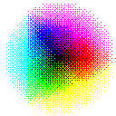
![[IM Output]](posterize_3_od.gif)
![[IM Output]](posterize_6_od.gif)
The '
threshold' dither map (instead of '
o8x8' used
above) effectively converts "
-ordered-dither" into an un-dithered posterization method.
Finally the
Ordered Dither does allow you to
specify a different number of color levels, for each individual color channel.
Something that the "
-posterize" operator does not currently allow.
Threshold Dithering Methods
Threshold Images
The simplest method of converting an image into black and white bitmap (to
color) image is to use "
-threshold". This is actually a simple mathematical operator that
just provides a cut-off value. Anything equal to or below that value becomes
black, while anything larger becomes white.
magick logo.png -threshold -1 threshold_0.gif
magick logo.png -threshold 25% threshold_25.gif
magick logo.png -threshold 50% threshold_50.gif
magick logo.png -threshold 75% threshold_75.gif
magick logo.png -threshold 100% threshold_100.gif
|
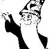
![[IM Output]](threshold_50.gif)
![[IM Output]](threshold_100.gif)
As you can see a value of '
-1' will magick all colors white,
while '
100%' converts all colors to black. A '
50%'
is of course the most common value used.
A value of '0' is a special case which turns all non-pure black
colors, white. Of course if the image does not have pure-black colors, then
you will only get a solid white image!
magick logo.png -threshold 0 threshold_black.gif
| |
![[IM Output]](threshold_black.gif)
|
If you actually want to magick all non-pure white colors to black, then
I recommend that you threshold the negated image instead of trying to work out the right threshold value to
use (one less than IM's current 'MaxRGB'), a value that is dependant on your
specific IM's compile time in Quality, or
'Q' setting.
magick logo.png -negate -threshold 0 -negate threshold_white.gif
| |
![[IM Output]](threshold_white.gif)
|
The "
-threshold"
operator can be classed as an ultimate 'contrast' operator, maximizing the
differences in colors by the threshold level. It is however a gray-scale
operator, meaning that the "
-channel" setting, can be used to adjust which color channel the
operator will be applied to.
For example you can threshold each of the individual channels of the image to
produce the same effect as an un-dithered level 2 "
-posterize" operation.
magick logo.png -channel R -threshold 50% \
-channel G -threshold 50% \
-channel B -threshold 50% threshold_posterize.gif
| |
|
|
Note that "-threshold" treats any transparency in an image as a matte
channel, not an alpha channel (just as it is stored internally within IM).
As such caution is needed if you plan to apply this operator to the alpha
channel. See Matte Channel for more
details.
|
For a more automatic thresholding technique, you can use a
Two Color Quantization technique that we showed previously.
For example, this will threshold the image based on the best two colors found
in the image. These colors may not necessarily be greyscale or even opposites,
just the two colors that best represent the whole image. The two colors are
then mapped (using "-normalize") to pure black and white.
magick logo.png +dither -colors 2 -colorspace gray -normalize \
threshold_two_color.gif
| |
|
Random Dither and Threshold
The "
-random-threshold" operator is a special form of bitmap image
converter. In this case it uses a very simple "random dither" to determine if
a particular pixel is to become a white pixel or a black pixel.
Unlike the "
-threshold"
or the "
-monochrome"
operators, or even the variations in the previous section, the selected
channels (set with "
-channels") are not merged together into single grey-scale channel
and dithered as a single unit. Instead "
-random-threshold" works
on each selected channel completely independently of each other.
Of course using the operator directly will result in a 2 level posterization
of the image using a random dither.
magick logo.png -random-threshold 0x100% random_posterize.gif
| |
![[IM Output]](random_posterize.gif)
|
Converting to gray-scale will equalize all the channels in the image, before
they are dithered. But as each channel is dithered independent of each other
and in a random way, the result is not a bitmap image as you would expect.
Instead you will get a splatter of color pixels, especially for mid-tone
colors.
magick logo.png -colorspace Gray -random-threshold 0x100% \
random_greyscale.gif
| |
![[IM Output]](random_greyscale.gif)
|
Here is the correct way to generate a proper random dithered bitmap image.
magick logo.png -colorspace Gray -channel B \
-random-threshold 0x100% -separate random_monochome.gif
| |
![[IM Output]](random_monochome.gif)
|
Basically what it did was to only dither one channel of the grey-scaled
image, and then use the "
-separate" channel operator to extract that channel as the
final bitmap image. Tricky but effective.
As a special feature for this operator, IM will ensure a bitmap image is
generated in the special "-channels" option of 'All' is used.
magick logo.png -channel All -random-threshold 0x100% random_all.gif
| |
![[IM Output]](random_all.gif)
|
However please note that any alpha channel will be ignored and lost using this
method, as such it is not normally recommended. I myself only discovered this
ancient feature by accident from the source code.
Now that you know how to use the operator to correctly generate bitmaps
from a color image lets look how the argument effects the range of the
dithering. This also shows clearly the 'clumping' of pixels that this dither
produces.
#magick -size 20x640 gradient: -rotate 90 gradient.png
magick gradient.png -channel All \
-random-threshold 0x100% random_grad_0x100.gif
magick gradient.png -channel All \
-random-threshold 10x90% random_grad_10x90.gif
magick gradient.png -channel All \
-random-threshold 25x75% random_grad_25x75.gif
magick gradient.png -channel All \
-random-threshold 50x50% random_grad_50x50.gif
|
![[IM Output]](random_grad_0x100.gif)
![[IM Output]](random_grad_50x50.gif)
A "
-random-threshold" setting of '
0x100%' will produce a
purely 'Random Dither' of the image. If the two bounds are set to the same
value (or even past each other) it will just produce a pure "
-threshold" image.
Using any other sets of bounds (usually specified using a percentage) will
threshold the bitmap outside the given range, while producing a random dither
pattern for the values within the given range.
The best results can be obtained by using a slightly smaller range, just as
you get using the "-monochrome" operator. A value of about '30x80%'
probably the best result for most cases.
magick logo.png -channel All -random-threshold 30x80% random_30x80.gif
| |
![[IM Output]](random_30x80.gif)
|
Of course the result is still not very good. But then this is the simplest and
worst form of dithering you can get.
What actually happens is that the randomized dither pattern tends to produce
'clumps' of pixels rather than a smooth dither pattern. this is due to the
high frequency 'noise' in the random number generator. However at very high
resolutions a random dither has been shown to produce an extremely good result,
if random enough. IM uses a cryptographic level of randomness so it will
likely be very random, though images are rarely used at a high enough a
resolution to make it useful in this way.
One 'fix' for this dither, that has been suggested is to use a random 'blue
noise' generator (a high frequency filter, as opposed to a low frequency 'pink
noise' filter used in sound production). This should remove the clumping of
the pixels, but is very difficult to implement digitally. No known
implementation of 'blue noise randomized dither' has been found, and unlikely
to be ever created.
Ordered Dithering
While a random dither produces random clumps of pixels, and the various error
correction dithers produce an essentially random pattern of dots, ordered
dithering is basically the opposite. It is designed to be as mathematically
deterministic as possible. So deterministic, that you actually need to
specify the pattern for it to should use in dithering the image.
The "
-ordered-dither" operator will dither each of the selected
"
-channels" in the
image a given predefined pattern. The argument defines the pattern (known as a
threshold map) to use.
These threshold maps fall into three basic styles.
Diffused Pixel Dithers where the pixels are placed as far from each other
as possible, so as to avoid 'clumping' and tiling artifacts. Or to clump them
together into tight dots that makes them easier to mechanically print, in a
technique known as
Digital Halftoning. There is also
some specialized artistic threshold maps that we will also be looking at, and
even designing our own dithering pattern or threshold maps.
In each case the number of pixels that is on or off in the threshold map
depends on the grey-level intensity of the image (or individual color channel)
that is being dithered into a bitmap.
The map adds pixel threshold levels in a consistent manner, so that once a
pixel turns on at a particular 'threshold' it remains on for any lighter grey
color. This consistency is very important, otherwise artifacts are produced
along the boundaries of changes the dither pattern.
The important point about this is that the result for each pixel in an image
is purely mathematically determined independently of any other pixel in the
image. As such any small change to the original image will have absolutely no
effect on the image in any other area a problem that
Error Correction Dithers have, as we saw above.
This point is vital to consistent dithering of video images and optimized
animations.
Diffused Pixel Dithering
The original purpose of ordered dithering, and what most graphic programmers
expect to get when you use an ordered dither is sometime more correctly
termed, "Diffused Pixel Ordered Dither".
What this means is that pixels are added to the tiled map as the threshold
intensity increases, so that they are as far away from each other and evenly
distributed as possible. This produces a highly consistent pattern that look
quite smooth and near invisible on most modern displays.
Such patterns have been worked out for tiling sizes that are a power of 2,
namely, tile sizes of 2, 4, and 8. Though IM also provides a reasonable
threshold pattern for a 3 by 3 threshold map tile.
Here is the current set of built-in ordered dithers that IM currently
provides. Remember the argument reflects the tile size of the ordered dither.
magick logo.png -ordered-dither o2x2 logo_o2x2.gif
magick logo.png -ordered-dither o3x3 logo_o3x3.gif
magick logo.png -ordered-dither o4x4 logo_o4x4.gif
magick logo.png -ordered-dither o8x8 logo_o8x8.gif
|
![[IM Output]](logo_o2x2.gif) 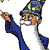
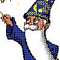
![[IM Output]](logo_o4x4.gif)
Note how a larger tile size allows you to simulate more 'color levels', but
also generates more noticeable defects or rectangular arrays of pixels at
certain levels.
|
The 'o8x8' ordered dither was part of the IM core code for a
long time, but was not used. It was only added as an option to the
"-ordered-dither" operator IM v6.2.9, when IM Examples started
to detail the use of this operator.
At this time the maps were given more definitive names to allow further
expansion of the "-ordered-dither" operator, though the older backward
compatible 'tile size' names, were retained as aliases to the new names.
Also the 'maps' that produced the 'o3x3' and 'o4x4' were completely revised
to produce a better 'diffused pixel' dither pattern. Before this the maps
produced distinct 'clumps' of pixels.
See Ordered Dither Upgrade notes
page for examples of the old patterns before they were fixed, as well as
other changes made during the development for the official release of the
upgrades in IM v6.3.0.
|
Of course you need to magick the image to grey-scale first to produce a
proper bitmap of all the channels in the image, however as the process is not
random you don't need to post-process the image as you need to for the
-random-threshold"
operator simplifying things enormously.
magick logo.png -colorspace Gray -ordered-dither o2x2 logo_bw_o2x2.gif
magick logo.png -colorspace Gray -ordered-dither o3x3 logo_bw_o3x3.gif
magick logo.png -colorspace Gray -ordered-dither o4x4 logo_bw_o4x4.gif
magick logo.png -colorspace Gray -ordered-dither o8x8 logo_bw_o8x8.gif
|
![[IM Output]](logo_bw_o2x2.gif) 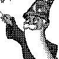
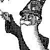
![[IM Output]](logo_bw_o4x4.gif) 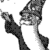
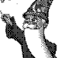
As a reference here are each of the "
-ordered-dither"
'diffused pixel' patterns applied to a grey-scale gradient, so you can see
clearly what they look like.
# Threshold Non-Dither / Minimal Checkerboard Dither
magick gradient.png -ordered-dither threshold od_threshold.gif
magick gradient.png -ordered-dither checks od_checks.gif
# Diffused Pixel Dither
magick gradient.png -ordered-dither o2x2 od_o2x2.gif
magick gradient.png -ordered-dither o3x3 od_o3x3.gif
magick gradient.png -ordered-dither o4x4 od_o4x4.gif
magick gradient.png -ordered-dither o8x8 od_o8x8.gif
|
![[IM Output]](od_checks.gif)
![[IM Output]](od_o2x2.gif)
![[IM Output]](od_o3x3.gif) 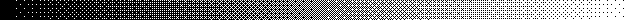
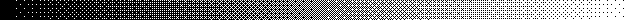
The number of effective or pseudo-level patterns produced by a specific
ordered dither, is typically (by not always) equal to the number of pixels in
the pattern plus one. As such a '
o3x3' ordered dither will
produce 3×3+1 or 10 effective grey levels per channel (black, white, and
8 artificial gray patterns) in the resulting image.
Also shown above are two special minimal dither threshold maps:
- a straight '50% threshold' non-dither, which does not produce any extra
grey levels and
- a 'checks' or checkerboard dither pattern, that only inserts a single
pattern to add an extra 'pseudo-level' to the resulting gradient.
Digital Halftone Dithers
The "
-ordered-dither" was extended in IM v6.2.8-6 with a set of
digital-halftone dither patterns (thanks Glenn Randers-Pehrson). All of which
were set to produce a simple 45 degree dot pattern. With IM v6.3.0 this was
further expanded with a similar set of larger un-angled halftones.
|
Before the release of IM v6.3.0 halftone screens were selected by using
an argument of the form '{number}x1'. With the Re-Development of Ordered Dither this
limitation was lifted, better naming selected, and extra halftone screens
(orthogonal forms) was added (see example arguments below).
|
Note that digital halftoning is not strictly a true halftone screen, which is
designed to handle round dots of ink mechanically deposited onto a medium such
as paper, cardboard or even metal. Such dots can overlap, and smear during
the printing process, thus requiring some non-linear level adjustment. This
is not needed for producing purely digital halftone effects. For more details
of the process see the document
Dithering and
Halftoning (PDF).
That said the
Ordered Dither digital halftone
patterns do provide the same basic effect as seen in newspapers and cheaply
printed magazines.
# Halftone Screen (45 degree angle)
magick logo.png -ordered-dither h4x4a logo_h4x4a.gif
magick logo.png -ordered-dither h6x6a logo_h6x6a.gif
magick logo.png -ordered-dither h8x8a logo_h8x8a.gif
# Halftone Screen (orthogonal)
magick logo.png -ordered-dither h4x4o logo_h4x4o.gif
magick logo.png -ordered-dither h6x6o logo_h6x6o.gif
magick logo.png -ordered-dither h8x8o logo_h8x8o.gif
|
![[IM Output]](logo_h4x4a.gif)
![[IM Output]](logo_h6x6a.gif) 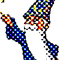
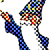
![[IM Output]](logo_h4x4o.gif)
![[IM Output]](logo_h6x6o.gif)
![[IM Output]](logo_h8x8o.gif)
Again to use the "
-colorspace" operator to generate a true bitmap dither of an
image.
# Halftone Screen (45 degree angle)
magick logo.png -colorspace Gray -ordered-dither h4x4a logo_bw_h4x4a.gif
magick logo.png -colorspace Gray -ordered-dither h6x6a logo_bw_h6x6a.gif
magick logo.png -colorspace Gray -ordered-dither h8x8a logo_bw_h8x8a.gif
# Halftone Screen (orthogonal)
magick logo.png -colorspace Gray -ordered-dither h4x4o logo_bw_h4x4o.gif
magick logo.png -colorspace Gray -ordered-dither h6x6o logo_bw_h6x6o.gif
magick logo.png -colorspace Gray -ordered-dither h8x8o logo_bw_h8x8o.gif
|
![[IM Output]](logo_bw_h4x4a.gif) 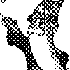
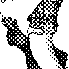
![[IM Output]](logo_bw_h8x8a.gif)
![[IM Output]](logo_bw_h4x4o.gif) 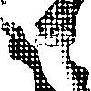
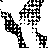
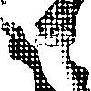
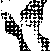
And finally another gradient reference image to clearly show the halftone
dither pattern, and how the pixel clumps within the dither pattern grow into
each other as the grey-level changes.
# Halftone Screen (45 degree angle)
magick gradient.png -ordered-dither h4x4a od_h4x4a.gif
magick gradient.png -ordered-dither h6x6a od_h6x6a.gif
magick gradient.png -ordered-dither h8x8a od_h8x8a.gif
# Halftone Screen (orthogonal)
magick gradient.png -ordered-dither h4x4o od_h4x4o.gif
magick gradient.png -ordered-dither h6x6o od_h6x6o.gif
magick gradient.png -ordered-dither h8x8o od_h8x8o.gif
magick gradient.png -ordered-dither h16x16o od_h16x16o.gif
# Circle Halftones (black and white)
magick gradient.png -ordered-dither c7x7b od_c7x7b.gif
magick gradient.png -ordered-dither c7x7w od_c7x7w.gif
|
![[IM Output]](od_h4x4o.gif)
![[IM Output]](od_h6x6o.gif) 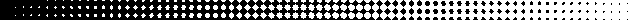
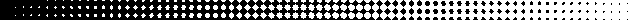
![[IM Output]](od_h16x16o.gif)
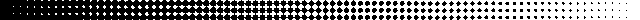
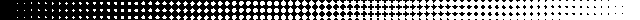
Up until ImageMagick version 6.2.9 all the above threshold ordered dither map
were all that was possible with IM. This has now changed, allowing users to add
their own patterns, add even contribute them to the IM community.
The 'Circle' halftone thresholds were added by Glenn Randers-Pehrson, IM
v6.6.5-6.
Offset HalfTone Dither
The only problem with the above halftone dither is that it is that the exact
same threshold map (tile) is applied to all the color channels in the same
way. That means the same set of primary color is arranged in dots with the
same 'center'.
To get what is known as 'Offset Printing' the threshold pattern is rotated in
a particular pattern such that the colors form small scale 'rosette patterns'
that destroyes the more horrible looking interference (moiré) patterns that
you could otherwise develop.
This diagram basically explains the process, and is explained in great detail
on the Wikipedia Page,
Halftone.
Note however that the rotated screens do not tile very well, as such the best
idea is to actually generate the rotated pattern directly, rather than use
a tiles threshold pattern.
Here is one way to give an image an offset-halftone printing look, using small
rotated 2x2 pixel checkerboard pattern, which is about the smallest 'screen'
that can be used.
magick colorwheel.png -set option:distort:viewport '%wx%h+0+0' \
-colorspace CMYK -separate null: \
\( -size 2x2 xc: \( +clone -negate \) \
+append \( +clone -negate \) -append \) \
-virtual-pixel tile -filter gaussian \
\( +clone -distort SRT 60 \) +swap \
\( +clone -distort SRT 30 \) +swap \
\( +clone -distort SRT 45 \) +swap \
\( +clone -distort SRT 0 \) +swap +delete \
-compose Overlay -layers magick composite \
-set colorspace CMYK -combine -colorspace RGB \
offset_colorwheel.png
| |
![[IM Output]](offset_colorwheel.png)
|
Note that the four rotated 'screens' are applied to the image as a whole, it
is only the "
-combine" step in CMYK colorspace, that actually
extracts the 4 different color channels from the screened images.
Also the 'no-op' distort for the last 'black' channel is important as it will
blur the input checker pattern according to the Gaussian filter that was used
on the other channels during their rotations, even though that screen itself
is not being rotated.
And here I use the scaling function of the
SRT
Distort used to generate the rotated tiles to create a slightly larger and
more blurry 'screen pattern'.
magick parrots_med.png -set option:distort:viewport '%wx%h+0+0' \
-colorspace CMYK -separate null: \
\( -size 2x2 xc: \( +clone -negate \) \
+append \( +clone -negate \) -append \) \
-virtual-pixel tile -filter gaussian \
\( +clone -distort SRT 2,60 \) +swap \
\( +clone -distort SRT 2,30 \) +swap \
\( +clone -distort SRT 2,45 \) +swap \
\( +clone -distort SRT 2,0 -blur 0x0.7 \) +swap +delete \
-compose Overlay -layers magick composite \
-set colorspace CMYK -combine -colorspace RGB \
offset_parrots.png
|
![[IM Output]](offset_parrots.png)
Note that the pattern remains very 'square-like' especially the black screen
from which all the others are derived.
FUTURE POSSIBILITY: Replace the 2 pixel checkboard in the above with
"pattern:gray50" pixel level checkerboard pattern. Gaussian filter options
can be used to adjust the bluriness of the scaled pattern. Alternatively, you
can blurry scale the pattern, and thresholded it, to make rounder dots. This
can then be rotated as previously to create the 4 color screens.
It also would be better is a larger screen using a pattern of hexagonal dots
could be used, rather than the checkerboard pattern I have used above.
It is important to note that this is not really generating color dots like
true offset printing, but faking it by simply multiplying the color screens
against the original image. You can see that this is the case due to the
sharp color change along the edges of the red parrot against the green
background. True offset printing using only dots of pure color will not have
any middle of dot color changes. It is the size of the pure colored dot that
should change, depending on the average of the colors in that area reprended
by the dot in the source image.
To actually generate an true offset printing image only containing round dots
in each color channel of appropriate size would require a lot more work. The
average color in each dot in each color channel will been to be determined,
and from that the appropriate size of colored dot (anti-aliased circle)
generated.
Anyone like to give it a go?
The above was from a discussion in the IM forum discussion
CMYK Halftone Effect which
looks at how photoshop 'fakes it', and how ImageMagick could achieve the same
effect.
This discussion is also related to
B/W Halftone Dither which
takes a closer look at generating true halftone screens using actual dots of
appropriate sized. That discussion however did not take it to the next step of
using offset (rotated) screens. Such screens would probably require rotating
the image to generate the dots, then rotating the dot pattern back again for
that specific color channel.
XML Threshold Maps
From IM version 6.3.0, rather than using a fixed set of map that were built
into the source code of IM (shown previously), the maps are now read in from a
set of XML data files external to the program itself.
As part of this change you can now list the available 'threshold maps' that
"
-ordered-dither"
operator can use.
magick identify -list threshold
|
The above list shows not only the threshold maps available, but also the
aliases provided for backwards compatibility or alternate naming, and those
defined in my own personal "
thresholds.xml" XML data file (saved
into the "
.magick" sub-directory of my home).
When "
-ordered-dither" is looking for a map, the first map that it finds
in the above list, will be used. As such you can not override a system
defined threshold pattern.
The system file "
thresholds.xml" (the path of which is given by
the above "
-list" option),
contains a complete summary of the format of the XML file. A format that is
simple enough (with error checks by IM) to allow users to define and create
their own ordered dither threshold maps.
For example here is a copy of the '
diag5x5' threshold map
I defined in my personal "
threshold.xml" file.
If you look it creates a simple 5x5 map of a single diagonal line that becomes
thicker as the threshold level increases. The level numbers in the map goes
from 0 to 5, one less than the divisor, which declares how many 'grays' it
needs to divide the color gradient into.
Here is a gradient dithered using this personal threshold map.
magick gradient.png -ordered-dither diag od_diag.gif
|
And here is an example of using that threshold to dither the alpha
channel of a simple shadowed image, a purpose for which I designed it.
magick -size 70x60 xc:none -font Candice -pointsize 50 \
-fill black -annotate +10+45 'A' -channel RGBA -blur 0x5 \
-fill white -stroke black -draw "text 5,40 'A'" shadow.png
magick shadow.png -channel A -ordered-dither diag shadow_diag.gif
|
![[IM Output]](shadow.png)
Pretty cool hey! More on dithering alpha channels later. First I need to also
show how to use the coloring abilities of expanded "
-ordered-dither"
operator.
Ordered Dither using Uniform Color Levels
With the release of IM v6.3.0, not only was the threshold maps used by
"
-ordered-dither"
changed so as to be read from external files, but the internal operations was
enhanced to allow it to use mathematically defined 'posterized' color maps.
This means you can generate a more deterministic dithering of images than you
can achieve with 'error correction dithering'. This is especially important
for color reductions involving animations as you will not get problems from
color differences between frames.
The posterization levels is passed to the "
-ordered-dither" argument
using an extra comma separated list of numbers appended to the name of the
threshold map to use. If no numbers are provided then the operator falls back
to the normal 2 color (or posterize level 1) color map.
For example and argument of '
checks,6' will use a classic
Web Safe Color Map (posterized level 6) color map (also
defined by the "
netscape: built-in colormap image). However as
the minimal dither map of '
checks' is used a single extra level
of dithering is added between each of the 6 color levels creating 11
pseudo-levels of colors in each channel of the image.
In other words even though only 6 levels of color per channel is being used
(producing 6^3 or 216 colors) the single dither pattern between levels
increases the dither to and effective 11 levels (producing and effective 11^3
or 1331 colors).
For example, here is a gray scale gradient dithered using 6 grey levels and
various threshold maps. The first map '
threshold' is a special
non-dithering ordered dither threshold map, showing just the colors used.
magick gradient.png -ordered-dither threshold,6 od_threshold_6.gif
magick gradient.png -ordered-dither checks,6 od_checks_6.gif
magick gradient.png -ordered-dither o2x2,6 od_o2x2_6.gif
magick gradient.png -ordered-dither o4x4,6 od_o4x4_6.gif
magick gradient.png -ordered-dither o8x8,6 od_o8x8_6.gif
|
![[IM Output]](od_threshold_6.gif)
![[IM Output]](od_checks_6.gif) 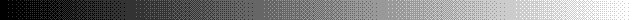
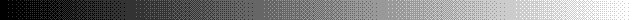
![[IM Output]](od_o8x8_6.gif)
As you can see even though only 6 colors are used, with ordered dithering you
increase the effective number of colors used to define the gradient, to a
point where you can be hard pressed to notice just how few colors were
actually used!
Not only can you define the number of posterization levels for all channels,
but unlike the "
-posterize" error correction dither option, you can specify the
levels for each channel. The numbers are assigned to the channels as per the
"
-channels" setting.
For example here we dithered the gradient using a special 332 color map (8
levels or red and green, 4 of blue) which defines a total of 256 colors.
magick gradient.png -ordered-dither o8x8,8,8,4 od_o8x8_884.gif
|
![[IM Output]](od_o8x8_884.gif)
Because of the different number of color levels per channel, the above image
does not contain just pure grey colors, but includes some bluish and yellowish
pixels which cancels each other out to produce extra levels of greys.
Now magick compare the
O-dithered version against
error correction dithered version using a posterization levels of 2, and 6,
and a "332 colormap" (8 levels of red and green, 4 of blue).
magick logo.png -ordered-dither o8x8 logo_o8x8_2.gif
magick logo.png -posterize 2 logo_posterize_2.gif
magick logo.png -ordered-dither o8x8,6 logo_o8x8_6.gif
magick logo.png -posterize 6 logo_posterize_6.gif
magick logo.png -ordered-dither o8x8,8,8,4 logo_o8x8_332.gif
magick logo.png -remap colormap_332.png logo_remap_332.gif
|
![[IM Output]](logo_o8x8_2.gif)
![[IM Output]](logo_posterize_2.gif)
![[IM Output]](logo_o8x8_6.gif)
![[IM Output]](logo_o8x8_332.gif)
The first image of each pair in the above is mathematically ordered dithered,
while the second is pseudo-randomly 'error correction' dithered.
The last pair uses the special '332 colormap' (See
Generating Color Maps), which is regarded as probably the best posterize
colormap for general images with a 256 color limit. The odd difference in
channel levels producing a slightly better shading of colors for this cartoon
like image.
It was to allow the production the '332 colormap' that the "
-ordered-dither" operator,
included the ability to specify separate levels for each color channel.
Better Ordered Dither Results
Lets take a closer look at the level 6
O-Dither
we just generated.
magick logo.png -ordered-dither o8x8,6 -format %k info:
|
As you can see for this image we did not even come close to filling the GIF
color table (256 limit). Basically as the image generally consists of mostly
blue colors, very few shades of red or even green colors from a level 6
uniform colormap was even used.
However by increasing the number of posterization level we can fill the GIF
color table better, so as to produce a better
O-Dithered Image.
magick logo.png -ordered-dither o8x8,13 -format %k info:
|
This produces enough colors to be only slightly smaller than the GIF color
table limits. With the increase in the number of colors the result looks
a lot better that the results of a simple standard uniform colormap.
magick logo.png -ordered-dither o8x8,13 logo_o8x8_13.gif
| |
![[IM Output]](logo_o8x8_13.gif)
|
As you can see with a high 'levels' value, "
-ordered-dither" can
produce images that are comparable to color quantized, to the specific color
picking generated by color quantization and an error correction dither.
The major point about these images, is not that they are of high quality.
After all a full
Color Quantization can more easily
produce better color map for the image. But that the low level dither pattern
within the image is fixed, regardless of any small changes that may occur.
Only the area changes will be changed in the Ordered Dithered Image.
That is, they do not have the
E-Dither
Sensitivity to change that causes problems for
Frame Optimization in GIF animations. (see
Optimization Problem)
Of course for an animation, you will need to "
-append" all the images together,
before checking how many colors is actually used. And you will need to use the
special "
+remap" option
after using the "
-ordered-dither" to force IM to generate a 'common global
colormap' for ALL the images, even though you have already performed color
reduction and dithering.
This method of determining the number of color levels is not simple to
determine, but it does works. I hope to work out a way for IM to determine the
best level automatically, especially for GIF animations.
DIY Dither Patterns and Threshold Maps
Previously I show you that the new "
-ordered-dither" operator
can accept an user defined dithering pattern. Here I am going to show you how
you can create your own dither pattern. Specifically a special pattern I found
useful for generating a shadows consisting of horizontal lines.
Multi-Image Dither Patterns
The first thing you need to do is create a set of images defining the pattern
you want to create. The pattern should start with a solid black image of the
right size as the first image (all pixels off) and a solid white image at the
other end (all pixels on).
The next image should be the middle 50% grey pattern, defining the the basic
style of the dithering you are trying to achieve.
For example here is my initial DIY dither pattern. Which I save into a
multi-image GIF file (not a GIF animation)...
magick -size 2x2 xc:black \
\( +clone -draw 'fill white line 0,0 1,0' \) \
xc:white dpat_hlines2x2.gif
magick montage dpat_hlines2x2.gif -tile x1 -background none -frame 2 \
-filter box -geometry 32x32+5+0 dpat_hlines2x2_imgs.gif
|
![[IM Output]](dpat_hlines2x2_imgs.gif)
This is about the simplest set of dither pattern images you can get,
and is very similar to the 'checks' or 'Checkerboard Dither', but with
horizontal lines, rather than a checker pattern.
So you can see just what this dither pattern would look like, here is a rather
simple DIY ordered dither, that makes direct use of the threshold dithering
image set.
magick gradient.png dpat_hlines2x2.gif \
-virtual-pixel tile -fx 'u[floor((n-1)*u)+1]' dgrad_hlines2x2.gif
|
![[IM Output]](dgrad_hlines2x2.gif)
As you can see the dither pattern is nothing fancy.
The "
-fx" function is a
variation of the
Color Lookup Tables
function, namely, an IM Dither Lookup Patterns' type function. And with a
"
-virtual-pixel"
setting of '
tile', the function does not even need to know the
size of the dither pattern image you are using.
|
The use of "-virtual-pixel" by the "-fx" operator using calculated indexes like this was broken
before IM version 6.2.9-2.
|
Lets try this dither pattern set again but using a simple shadowed image...
magick shadow.png dpat_hlines2x2.gif -channel A \
-virtual-pixel tile -fx 'u[floor((n-1)*u)+1].g' \
shadow_dpat_hlines2x2.gif
|
![[IM Output]](shadow_dpat_hlines2x2.gif)
DIY Ordered Dither Threshold Maps
The above DIY dither pattern is about as simple a dither pattern as you can
get, and as such we can magick it directly into a XML threshold map, so that
the fast built-in "
-ordered-dither" operator can make use of it.
Here is the final XML definition, which I saved in my own personal threshold
map file "
~/.magick/thresholds.xml" of my "$HOME" directory.
The XML format is very simple, and defines a 2x2 pixel map. The first black
image is given a value of zero, and has no pixels, so no zero values is
present. The pixels turned on (made white) in the middle image is set to
'
1' and the remaining or second image pixels are given a value of
'
2'.
The '
divisor=' defines the number of images, or pseudo-color
levels (fake color levels) this dither pattern represents, so it has a value
of '
3'. It divides the pixel values, to defined the color level
at which that pixel is to be turned on. As such the top two pixels are turned
on for colors larger than 1/3, while the bottom two are turned on for color
values larger that 2/3. That is each pixel value represents a 'threshold'
level, and why dither patterns are also called threshold maps.
The rest of the definition defines the names (and optional alias) by which you
can refer to the threshold map for the ordered dither operator.
So lets try it out...
magick gradient.png -ordered-dither hlines2x2 od_hlines2x2.gif
magick shadow.png -channel A \
-ordered-dither hlines2x2 shadow_hlines2x2.gif
|
![[IM Output]](od_hlines2x2.gif)
As you can see the result is reasonably good, but we can do other things
to improve the result.
By adjusting the threshold values in the map, we can change the boundary's, so
it does not divide the color space into 3 equal areas...
Note how I increased the divisor to '
10', so as to divide the
color levels into ten equal sections. I then changed the threshold settings
so that the pattern starts at a 30% threshold at the transparent end (black),
to 90% for fully opaque (white).
And here is the results of changing the threshold map.
magick gradient.png -ordered-dither hlines2x2a od_hlines2x2a.gif
magick shadow.png -channel A \
-ordered-dither hlines2x2a shadow_hlines2x2a.gif
|
As you can see this widened the range of semi-transparent pixels that use pure
horizontal lines as a dither pattern. This gives a better better shadow
effect, though it probably should only be used with a less fuzzy shadow than
the example used here.
Note however that this type of change to a threshold is very uncommon. Though
justified for the intended use in this case. Basically it does not properly
define a gradient, or allow for lighter and darker shades of patterns. For
that we need to make a much more complex threshold map, with more pixels, and
more patterns.
DIY Horizontal Line Dither
Here I expanded the simple horizontal lines dither pattern I created above
into a set of patterns, to produce a smoother gradient from 'off' to 'on'.
This was the result.
magick montage dpat_hlines.gif -filter box -geometry 60x20+2+0 \
-tile x1 -background none -frame 2 dpat_hlines_images.gif
magick gradient.png dpat_hlines.gif \
-virtual-pixel tile -fx 'u[floor((n-1)*u)+1]' \
dgrad_dpat_hlines.gif
magick shadow.png dpat_hlines.gif -channel A \
-virtual-pixel tile -fx 'u[floor((n-1)*u)+1].g' \
shadow_dpat_hlines.gif
|
![[IM Output]](dpat_hlines_images.gif)
As you can see it now consists of 9, 12x4 pixel images. It does not represent
all the pixel patterns that you could have, but this enhances the effect of
the lines. Also I doubled its height so as to jitter the gaps in the lines
appropriately.
Here is another example of using this dither pattern...
magick -size 120x55 xc:white -draw 'fill #777 ellipse 50,43 30,5 0,360' \
-motion-blur 0x15+180 -blur 0x2 sphere_shadow.png
magick sphere_shadow.png dpat_hlines.gif \
-virtual-pixel tile -fx 'u[floor((n-1)*u)+1]' \
sphere_shadow_dither.gif
magick sphere_shadow_dither.gif -fill red -stroke firebrick \
-draw 'circle 35,25 35,5' sphere_shadow_hlines.gif
|
![[IM Output]](sphere_shadow_hlines.gif)
The next step is to magick this set of dither patterns into single threshold
map image, rather than a set of multiple images. This is achieved by using
some fancy image manipulations to merge all the images together.
magick -size 1x10 gradient: -flip -crop 1x1 +repage -delete 0,-1 \
-scale 12x4\! null: \( dpat_hlines.gif -delete 0 \) \
+matte -compose CopyOpacity -layers Composite \
-reverse -compose Over -flatten +matte dmap_hlines.png
| |
|
The value '10' is one more than the number of images in the
dither pattern while "-scale 12x4\!" is the size of the dither
patterns being converted into a threshold map.
The result is a grey-scale map, with no pure black or white colors. The grey
level used for a pixel means that if the color level is that grey value or
higher, then that pixel should be turned on. That is each grey level is the
'threshold' level at which the color value goes from black to white.
If you like to look at the image in another way, dark pixels generally result
in those pixels being turn on for more color levels. While light pixels are
only turned on when the image color becomes very bright. This is almost
a negation of what the image actually looks like, but if you think about it it
does make sense.
I also used a PNG image rather than a GIF image for the map as only one
image needs to be saved, and more importantly, to attempt to preserve 16 bit
quality levels for the threshold values. GIF can only handle 8 bit color
levels.
Now we can dither our images using, just a single image, and a much simpler
threshold comparison of each pixel directly against the dithering threshold
image (or map).
magick gradient.png dmap_hlines.png \
-virtual-pixel tile -fx 'u>=v' dgrad_dmap_hlines.gif
|
![[IM Output]](dgrad_dmap_hlines.gif)
See how much simpler a threshold map is. You have only one image, and one
direct comparison to do per pixel, for each channel that is being dithered.
This makes dithering using a threshold map very very fast. Much faster that
full color quantization. This simplicity is the why ImageMagick and most
graphics software use a threshold map to hold various dither patterns.
|
The greater-then or equal ('>=') test was not added to the
"-fx" operator, until IM
version 6.2.9-2. If this is a problem, use the inverted test
'v<u' in the above.
|
This simplicity however becomes a lot more complicated if the user wanted to
dither using multiple color levels. The proof of concept of this was first
worked out in the examples on the page Posterized Ordered Dither before
being incorporated into the IM core functions.
Now that we have a merged threshold image, we next need to magick the above
image into a XML threshold map, that IM can directly read, and the "-ordered-dither" operator
can use.
To do this we need to output our image as numbers representing the 9 grey
levels it represents. This is best done using the NetPBM or PBMplus image format, with a depth adjustment using the "NetPbm" image processing software.
This package is generally a standard linux install so most people will have it
already, or can install it from there normal software distribution.
The "pnmdepth" number is again the number of gray levels that the
threshold image contains.
magick dmap_hlines.png pgm:- | pnmdepth 9 | pnmnoraw > dmap_hlines.pgm
|
All the numbers (other than the 'P2' image magic identifier) in
the above are the numbers needed to generate the appropriate 'threshold map',
that you can add to your personal "thresholds.xml" file. For
example here is the resulting threshold map entry created from the above.
And here is an example of using this threshold map.
magick shadow.png -channel A -ordered-dither hlines shadow_hlines.gif
|
![[IM Output]](shadow_hlines.gif)
And that is how you can generate a complex threshold map from a progression of
images.
Dithering with Symbol Patterns
Now while you can use a single threshold map or threshold image, instead of a
multi-image pattern set for most dithering operations, that does not mean that
multi-image maps don't have there own uses.
You can use a set of lookup image to tile multiple areas all at once, rather
than one at a time. For example by scaling a simple image, and then replace
each pixel in an image with a particular symbol.
For example, here I take the very small 'eyes' image
![[IM Output]](../images/eyes.gif) and replace the individual pixels with various symbols, to produce such a
pattern for each pixel in the original image.
and replace the individual pixels with various symbols, to produce such a
pattern for each pixel in the original image.
magick montage dpat_symbols.gif -geometry +5+0 \
-tile x1 -background none -mattecolor blue -frame 3 \
dpat_syms_images.gif
magick eyes.gif -alpha off -colorspace sRGB -grayscale Average \
+matte -scale 1600% -negate \
dpat_symbols.gif -virtual-pixel tile -fx 'u[floor(15.9999*u)+1]' \
eyes_syms.gif
|
![[IM Output]](eyes_syms.gif)
The montage is used to expand the multi-image
GIF image so that you can see it's contents, without it being 'animated'.
You can adjust which "-grayscale" intensity method you want to use, from the normal
'Rec709Luminance' to a darker 'Rec709Luma', or use
a 'average' of either a non-linear 'sRGB colorspace,
or linear 'RGB' colorspace. You can even adjust the "-gamma" scaling of the values to
get the best spread of colors.
There are a lot of posibilities, and what is good depends more on your symbol
arrangement than actual method chosen. The key with the above is to somehow
ensure each color in the input image produces an unqiue symbol, and that can be
very tricky to achieve.
This example can be used for creating cross-stitch or knitting guides
that hobbists can follow, generating larger scale artwork from smaller comuter
images.
You can use this technique to tile greyscale images with a set of tiling color
images. The result is a bit like the landscape maps seen in many old computer
war games.
magick montage dpat_map.gif -geometry +5+0 -tile x1 -background none \
dpat_map_images.gif
magick -seed 100 \
-size 200x200 plasma:'gray(50%)-gray(50%)' -blur 0x15 \
-channel G -auto-level +channel -set colorspace sRGB \
dpat_map.gif -virtual-pixel tile -fx 'u[floor(5.999*u.g)+1]' \
map.gif
|
![[IM Output]](dpat_map_images.gif)
![[IM Output]](map.gif)
Note that I needed to ensure that IM thought of the grayscale image as being
already in the final sRGB colorspace (as the tile images are), even though it
is actually linear RGB data that is being used for FX index lookups. Without
this the resulting 'map' is skewed toward wooded landscapes, with little
chance of water areas.
As you can see any set of images can be used for the tiles, the images don't
even need to line up with each other, or even be the same size tile. Of
course if the tiles are the same size and are closely related to each other,
as in the case of the 3 blue 'sea' tiles, the tiled pattern can 'flow' from
one tiled area into another.
By replacing the tile with images of numbers you can also generate a sort of
paint by numbers guide. However some extra processing may be needed to border
the different areas. This is left as an exercise, mail your solutions to me,
and you can have your name in IM examples as the author for this technique.
Ordered Dither Random notes and Future possibilities
Under Construction
Ordered Dither with small numbers of colors.
When using a small number of colors for a small image a pseudo-random dither
like IM's hilbert curve error correction dither, or even a simpler
Floyd-Steinberg error correction dither (see Error
Correction Dither above ) produces a horrible looking result.
Ideally an Ordered Dither should be used with
low color and small icon like images to produce a much better looking result.
However at the moment ordered dither in IM can only used 'fixed'
mathematically generated color tables, and not just a collection of 'best'
colors.
Ordered Dither with a map of any colors
There is some algorithm that will allow you to use a set of specific colors for
ordered dithering.
Basically by adding the 'pseudo-colors' that an ordered dither algorithm can
generate (which could involve three color dithering), to the given color map,
to 'fill it out'. You can then 'map' the individual pixels of an image to this
'expanded color map'.
From that initial mapping to a specific pseudo-color) the actual color can be
picked from the threshold map that generates that pseudo-color, and thus order
dither areas of that color, and thus the whole image to a given set of colors.
Because of my background in icons, and now GIF animations, I definitely would
like to see an any color ordered dither implemented, but I have yet to find
a practical reference to how to do ordered dithers with a fixed set of colors.
Created: 11 August 2006
Updated: 8 May 2010
Author: Anthony Thyssen, <Anthony.Thyssen@gmail.com>
Examples Generated with:
URL: https://imagemagick.org/Usage/quantize/
| ![[IM Text]](compare_navy.txt.gif)
![[IM Text]](compare_transparency.txt.gif)
![[IM Text]](compare_blue-navy_fuzz.txt.gif)
![[IM Text]](compare_fuzz_trans.txt.gif)
![[IM Text]](fuzz_navy2.txt.gif)
![[IM Output]](alpha_gradient.png)
![[IM Output]](alpha_colors_256.png)
![[IM Output]](alpha_colors_64.png)
![[IM Output]](alpha_colors_15n.png)
![[IM Output]](../img_diagrams/cmyk_offset.png)
![[IM Output]](tmap_diag.txt.gif)
![[IM Output]](dpat_hlines2x2.gif)
![[IM Output]](MAP.GIF)
![[IM Text]](tree_histogram.txt.gif)
{kind=link}
{kind=link}
{kind=link}
{kind=link}
{kind=link}
{kind=link}
{kind=link}
{kind=link}
{kind=link}
{kind=link}
{kind=link}
{kind=link}
{kind=link}
{kind=link}
{kind=link}
{kind=link}
{kind=link}
{kind=link}
{kind=link}
{kind=link}
{kind=link}
{kind=link}
{kind=link}
{kind=link}
{kind=link}
{kind=link}
{kind=link}
{kind=link}
{kind=link}
{kind=link}
{kind=link}
{kind=link}
{kind=link}
{kind=link}
{kind=link}
{kind=link}
{kind=link}
{kind=link}
{kind=link}
{kind=link}
{kind=link}
{kind=link}
{kind=link}
{kind=link}
{kind=link}
{kind=link}
{kind=link}
{kind=link}
{kind=link}
{kind=link}
{kind=link}
{kind=link}
{kind=link}
{kind=link}
{kind=link}
{kind=link}
{kind=link}
{kind=link}
{kind=link}
{kind=link}
{kind=link}
{kind=link}
{kind=link}
{kind=link}
{kind=link}
{kind=link}
{kind=link}
{kind=link}
{kind=link}
{kind=link}
{kind=link}
{kind=link}
{kind=link}
{kind=link}
{kind=link}
{kind=link}
{kind=link}
{kind=link}
{kind=link}